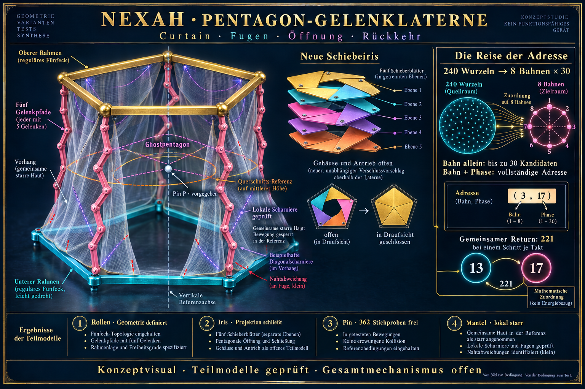
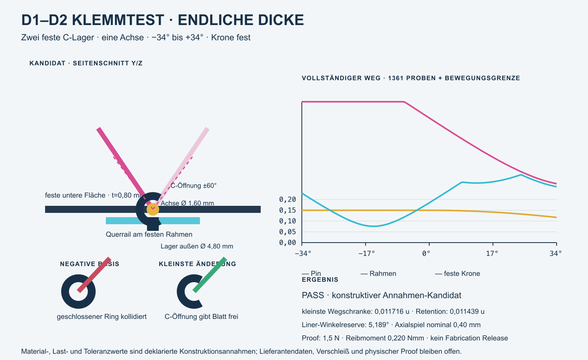
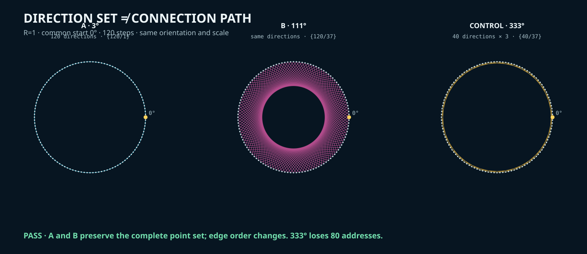

01 · Intake & Priorität
Frage und Ziel setzen.
Neue Beobachtungen, Notizen und Quellen werden einer bestehenden A0-Linie zugeordnet oder geparkt. Owner-Priorität und STOP bleiben explizit.
Hier behältst du den Überblick und steuerst A0. Diese operative Science-Arbeitsfläche bündelt Aufgaben, Prüfstände, Forschungsfragen, Prioritäten, Policies, Science Building, Returns, blockierende Lücken und Owner-Entscheidungen. Der freigegebene Forschungsstand wird von hier in A0 Science projiziert; der vollständige Desk bleibt intern.
Der Science Desk ist die operative Steuerfläche der bestehenden A0-Identität. Er bündelt Forschung und Science Building, ohne aus einem Build automatisch ein Finding oder aus einer Idee automatisch eine Study zu machen.
Neue Beobachtungen, Notizen und Quellen werden einer bestehenden A0-Linie zugeordnet oder geparkt. Owner-Priorität und STOP bleiben explizit.
Constitution, Lab Register, Evidence State, Claim Ceiling, Reproduzierbarkeit und Publikationsgrenze bestimmen den zulässigen nächsten Schritt.
Der Desk gibt Quelle, Carrier, View, erwarteten Record, Kontrollen, Return und Nicht-Behauptungen vor. Der Builder liefert Code, Tests und Receipt zurück.
Build, Engineering-Beobachtung, Finding, HOLD und offene Lücke werden getrennt zurückgeführt. Nur freigegebener Forschungsstand erscheint in A0 Science.
Diese Fläche ist der operative Überblick des Owners. Sie verbindet vorhandene Records, ohne aus einem To-do eine aktive Study oder aus einem sichtbaren Repository eine Publikation zu machen.
A0-BL-015 ist owner-autorisiert und wartet auf einen namentlich bestimmten qualifizierten Reviewer. Das eingefrorene SCC-003-Paket ist vollständig; Proof-Attack und Prior-Art-Prüfung stehen aus.
A0 führt relationale Identifizierbarkeit unter Darstellungswechsel. NEXAH Core trägt Quellen- und Implementierungslinien; weitere Science-Lab-Programme behalten ihre eigenen Gegenstände, Variablen und Evidenzregeln.
NSN / Science Navigator führt source-bound Identitäten und typisierte Relationen. Originalrecords behalten Evidenzautorität; der Graph ersetzt weder Lifecycle noch Claim-Prüfung.
A0 Science zeigt Status, Grenzen und Quellenportfolio. Repo-Sichtbarkeit, wissenschaftlicher Evidenzstatus und Publikationsfreigabe sind drei verschiedene Zustände.
Der neue A0 Assembly Atlas zeigt zehn vorhandene Nodes, vier Kantentypen, Originalquellen, Receipts und fünf STOP-Grenzen. Er ist Bauplan und Triagefläche, keine neue Theorie.
Bridge und Tower schließen ausschließlich als post-hoc typisierter View-Return. Mandelbrot und Julia teilen ausschließlich den komplexen Parameter c.
Root Room, Curtain und Earth sind source-bound Ansichten. Black Shadow bleibt eine Display-/Potentialrolle. NumberMagick, Rosetta- und Tower-Glyphen bilden einen historischen Konzeptfundus; die pink–weiß–grüne Phasennaht ist eine Owner-Lesart, noch kein Operator.
Kein gemeinsamer Tower-/Bridge-Takt; keine Identität von Shadow, Sphere, Pin und Mandelbrot; kein Earth↔ERITH-Adapter. Bei der Modular-Shadow-Tafel bleibt nur die falsche Gleichung 11357 = 3 × 5 × 757 auf HOLD. Der registrierte Träger ist 11357 = 41 × 277; der Linien- und Glyphenaufbau bleibt als source-bound View erhalten.
SOURCE_BOUND_ENGINEERING_ORIENTATION_VIEW / NO NEW FINDING. Wiederverwendung der bestehenden OCB-Identität; keine neue Family, Study, kanonische Relation, Finding-Promotion oder Publikationsfreigabe.Die Blue-Body-Bench liest die geordnete Dreiachsenroute 1st 60° TL → 2nd 90° → 3rd 90° zusammen mit konkaver und konvexer Transversalplatte, ohne Carrier-, Kraft-, Operator- oder Topologieclaim.
METHOD_RELEVANT_ENGINEERING_OBSERVATION / NO NEW FINDING. T · EF · LOᵢₙ bedeutet TORUS · ENVELOPE_FOLD · LOCAL_ORIENTATION_INWARD. Die Pressure Relation ist eine VIEW_CONTACT_NORMAL; Kraftwert und Kalibrierung bleiben NULL. Phase V ist der Pink-Strip-Schnitt; Einzahlung 1:2:10 steuert nur die dargestellte 13-teilige Mischung, während 10/20/30% getrennte Rabattlabels bleiben. Keine Preis- oder Kaufregel. Parent 1.111.111.111, Hinge PINK_K90_DIAMOND und 1:8878/A0 kehren unverändert zurück.Freigegebenen Forschungsstand, Resultate und Grenzen nach außen projizieren.
A0 Science · ForschungsstandScientific PositionReader & ErgebnisseQuellen & AuthorityPrioritäten, nächste Gates, offene Aufgaben und Owner-Entscheidungen.
Mission ControlAktuelle ArbeitBacklogMeine Field NotesFrage, Evidenz, Claim Ceiling, Kontrollen, STOP und formale Derivation.
PoliciesTests & LückenScientific PositionValidation BoundaryBegrenzte Forschungsinstrumente beauftragen, testen und als Receipt zurücknehmen.
Science-Build-FachBenchDiamond LensLOOK AGAINVerträge, Findings-Triage, Engineering-Returns und Forschungsverlauf.
Perception Returns25 Findings-RecordsMaster-ProtokollBuilder Log · B0 ↗Der Bench-Eingang zeigt die 39 vorhandenen Bench-Map-Module als filterbaren Bildkatalog. Gruppen und Bindungstypen sind auswählbar; Suchwörter finden auch Atlas, Euler/Fibonacci, Körper und Observer. Bereits gezeichnete Canvas-/SVG-Ansichten werden als Momentaufnahmen gelesen. Fehlende Vorschauen bleiben als Orientierungsskizzen beschriftet — kein automatisches Starten ungeladener Quellen.
Kacheln / „Zusammenhang“ nutzen die vorhandenen Detailfenster der A0-Orientierungsmap. Wo kein spezieller Knoten zugeordnet ist, öffnet der allgemeine Bench-Kontext; das ist keine neue exakte Quellenbindung. Das Menü-Raster ist automatisch nach Arbeitsbereich oder manuell in 2/3/4 Spalten wählbar. Q4×P3, TESA und andere mathematische Quellgrids werden nicht verändert. Neue visuelle Browserabnahme offen; keine neue Family oder wissenschaftliche Aussage.
Die bestehende Bench-Map umfasst jetzt 39 verlinkte Module in ihren unveränderten sechs operativen Gruppen: Quellen, Zustand/Adresse, Operatoren, Ansichten/Grids, Return und Prüfung/Records. Ein neuer Einstieg ordnet Körperweg, GLBs, Masken, TESA, Pascal und den vorhandenen 3×3-Game-Atlas. Es wurden keine Originalmodule verschoben, Quellen entladen oder Rechenregeln verändert.
Black–White–Blue ist zurückgestellt. Die gemeinsame räumliche Körperansicht und die Zuordnung von drei Dreierpaketen zu sieben Familien bleiben offen. Arbeitsbereiche sind keine neuen kanonischen Familien. Bisherige Prüf- und Return-Grenzen bleiben erhalten.
Fünf Anschlüsse im bestehenden Bench-Instrument: archivierte Fusion-/Euler-GLBs mit Binärbefunden und manueller Vieransicht; vorhandene House-Projektionen AM/VM/PM am selben Masken-Observer; gelesene Blue/Pink-Quelladressen plus separat gelesene Pascal-Auswahl; deklarierte 48→28-Ansichtsmaske mit sichtbaren Überlagerungen; gehaltener Record und lokaler Ansichts-Return. Der parallele Game-Demonstrator wird nicht dupliziert.
GLB 3.3 enthält fünf Ringmeshes: 1,20 / 1,95 / 3,15 / 5,10 / 8,25 mit etwa 0,03 Rohrstärke in lokalen Meshkoordinaten. 3.4 enthält Phi_Pulse (3% Skalierung) und LOT_Breathe. Helices_Rotate besitzt nur äquivalente Quaternion-Endpunkte und belegt keine volle Drehung. Originaldateien bleiben unverändert.
Grenze: TESA-Binning verwendet ein festes ±1,6-Anzeigefenster und ist keine historische/native Zuordnung. Ohne Quell-Witness kann der Rückweg mehrdeutig bleiben. Pascal, Q4×P3 und Spielträger bleiben getrennt. Body-Readback erfolgt einmalig auf Klick, nicht als gemeinsame Uhr. Return stellt nur die lokale gespeicherte Ansicht wieder her. Die zuvor gezeigten Ansichten wurden vom Owner als funktionierend gemeldet; das neue Panel benötigt noch seine eigene visuelle Abnahme. Keine neue globale Identität, Study, Family oder Publikationsfreigabe.
Der 3×3-Atlas ist jetzt in die äußere PLAY-Fassung integriert und dort der Einstieg für THREE DOMAINS. PLAY verändert den gemeinsamen Three-Domain-Zustand; alle neun Kacheln lesen denselben Generationstakt, ohne automatisch die gewählte Ansicht zu wechseln. Kompakt/Groß verändert nur die Darstellung. Die Software macht damit eine zentrale A0-Verbindung praktisch sichtbar: Quelle/Zustand → getypte Ablesung → Vergleich → Witness/Return. Sie vereinheitlicht die Träger nicht.
| Kachel | Sichtbare Ablesung | A0-Verbindung | Nicht behauptet |
|---|---|---|---|
| Reaction–Diffusion | Gray–Scott-Feld, Komponenten, Zyklen, Events und Boundary-Residual. | Eigenständiger endlicher Übergangsledger am gemeinsamen Spieltakt. | Keine Gleichsetzung mit LIFE oder Spin. |
| Conway LIFE | B3/S23-Feld und derselbe Typ endlicher Übergangsablesung. | Vergleichbare Ledger-Grammatik bei eigener Update-Regel. | Keine biologische oder chemische Mechanismusidentität. |
| Spin Field | Glauber-artiges Spinmodell mit Komponenten, Zyklen, Events und Residual. | Dritter unabhängiger Carrier im synchronen Vergleich. | Keine physikalische Verallgemeinerung. |
| Common Point · +1 | Arithmetischer Schwerpunkt der drei getrennten Phasoren. | Derivierter Joint als Readout; macht 3+1 sichtbar. | Keine vierte Welt und kein neuer Operator. |
| Euler | Drei getrennte Phasorebenen, Joint-Zentrum, Nullgate und Prime-Axis-Kontext. | n=g mod 8 verbindet arithmetischen Schritt und Exponential-/Kreisablesung. | Nicht-injektive Projektion; kein Domänen-Return und keine gemeinsame Dynamik. |
| Fibonacci | Exaktes Paar, Verhältnis, Cassini-Kontrolle und Spiraldarstellung. | n=g mod 31 adressiert die Paarrekurrenz; φ ist Ablesung, nicht Eingriff. | Eventzahlen speisen die Rekurrenz nicht; Spirale ist Anzeigegeometrie. |
| Ihara | Gerichteter Kantenstatus, erlaubte nicht-rückspringende Fortsetzung, Traces und Determinantenlücke. | Endliche Hashimoto-Graphlinse als getypte Adress-/Pfadablesung. | Keine Riemann-Identität, Resonanzphysik oder privilegierte Fibonacci-Kopplung. |
| k·NEG / Q° | Getrennte negative Ereigniszähler, Summe, Q°-Kontext und gespeicherter Checkpoint. | NEG-Ledger und Rückführung auf eine exakt gehaltene Generation. | Q° ist hier Kontext/Adresse, kein universeller physikalischer Winkel. |
| Blue Body · 48 | Ein Q4-Haus und derselbe Q4×P3-Record im AM/VM/PM-Beziehungsledger. | g → k mod 48 → frac(k/φ) → θ=2πu → e^{iθ} → rank₄₈ → 7·rank mod 48 → Q4×P3; exakter Adress-Witness. | Nur Takt-zu-Adresse-Projektion; kein Feedback und keine Carrier-Identität. |
Was der Build tatsächlich zeigt: Sehr verschiedene Objekte lassen sich in einer gemeinsamen Bedienzeit nebeneinander halten, wenn Quelle, Operator, Projektion und Return getrennt typisiert bleiben. Das 3×3-Grid macht Beziehungen sichtbar, ohne aus visueller Nähe Gleichheit abzuleiten. Der stärkste Softwarebefund ist daher die funktionierende Koordination heterogener Readouts mit erhaltenen Grenzen.
Currentness · 23.10.2026: Der datierte Return vom 21.10. bleibt als historischer Byte-Snapshot unverändert. Ein additiver Currentness-Receipt bindet dieselben sieben Quellpfade an ihren heutigen Stand; dadurch wird spätere, separat geprüfte Entwicklung nicht fälschlich als Beschädigung des historischen Returns behandelt.
Prüfung: Game/Switchboard 194 PASS, Atlas 10 PASS, eigenständige Linsen und Größensteuerung 16 PASS, Blue-Body-Linse 10 PASS, Mathfield-Navigation 30 PASS. Source Graph 269/32 PASS und Navigator-App 246/246 PASS. Visuelle Browser-/Mobile- und unabhängige Human-Utility-Abnahme bleiben offen.
Authority boundary: Engineering-Integration unter den bestehenden Identitäten MOD:NUMBER_VIEW_SUITE, ART:A0:MATHEMATICAL_JOINTS und MOD:TESSAREC. Kein neuer kanonischer Knoten, keine neue Relation, keine Study-Aktivierung, keine Findings-/Claim-Promotion und keine Publikationsfreigabe.
Der vorhandene Three-Domain-Atlas liefert seinen laufenden threedomain:render-Record nun über einen ausschließlich lesenden Fenstervertrag an den Paper-Boat Return D.U.T. Chemistry, Life und Physics bleiben getrennte Carrier. Die Bench friert bei Schritt 1 je Domain den exakten Vierkanal-Ledger C₀₀/C₀₁/C₁₀/C₁₁ ein und prüft bei 720° den vollständigen kanonischen 3×4-Fingerprint.
HOLD_SOURCE.C₀₀=0→0, nicht NŪLL.360° ist Projektionswiederholung; 720° vergleicht den vollständigen Capture-Fingerprint.Getrennte Masken: D5/Pentagon ist grün, D6/Hexagon rot, das weiße X hält die 45°-Gegenansicht und der lila-gelbe Falter markiert den lokalen Fold/Joint. Exakt bleibt nur 5+6=11 als Shell-Count. Es gilt ausdrücklich D5 ≠ D6 ≠ 11×11 ≠ 7×11; weder 11er-Zahlbild noch Farbe erzeugen eine Carrier-Identität.
Prüfung: Channel Adapter 29/29 PASS einschließlich Zwei-Fenster-Request/Record-Replay; Paper-Boat 89/89 PASS; isolierter Science-Desk-Return 47/47 PASS; angrenzende Zipper/D°G/YUGO/Scarab-Suiten 490/490 PASS; Three-Domain Atlas/Linsen 36/36 PASS. Source Graph 269/32 PASS; Navigator-App 252/252 PASS.
Return-Status: Engineering-Implementierung, maschinenlesbarer Receipt, bidirektionale Navigation und technische Rückbindung an den bestehenden Science Desk sind vollständig. Die lokale Browser-Pixelprüfung konnte unter der file://-Sicherheitsgrenze nicht automatisiert werden; visuelle und unabhängige Human-Akzeptanz bleiben deshalb als Owner-Gate offen. Keine neue Study, kein Forschungsrun, keine neue globale Identität oder kanonische Relation, keine Claim-/Finding-Promotion und keine Publikationsfreigabe.
Der Three-Domain/Paper-Boat-Faden und der Final-Pin/D°G-Faden werden hier gemeinsam lesbar, ohne ihre Records, Basen oder Operatoren zu verschmelzen. Der erste friert drei unabhängige Vierkanal-Ledger als 3×4-Record ein. Der zweite übergibt einen belegten Scanner-Pin als lokales Apertur-Receipt an die vorhandene D°G-/OS-11-Schleife.
HOLD_SOURCE.C₀₀/C₀₁/C₁₀/C₁₁, Partition, Marginals und den vollständigen 3×4-Fingerprint.OCCUPIED oder GAP; nur PINNED_2_TO_1 + OCCUPIED erzeugt ein akzeptierbares Receipt.TOWER / SHAFT → SHARED APERTURE → SHELL / UNDER-TOWER RETURN, ohne Uhr, Loopindex oder Samplingbasis zu verändern.q17 ≠ OS-11/N=18, D5 ≠ D6, 2:1 ≠ 1:2:1 und Owner-Glyphen sind keine Gleichungen.Exakter Zahlenkern: Die Final-Pin-Ansicht deklariert g₂:g₁=2:1 und normiert nur die Darstellung zu 2/3+1/3=1. Separat gelten 8²=64 und 3⁴=81; .83 bleibt untypisierter Owner-Marker. Das wird in Numbermagick als begrenzte Lesespur dokumentiert, nicht als neuer Operator oder physikalisches Mischgesetz.
Prüfung: Channel Adapter 29/29, Paper-Boat 89/89, Desk-Return 47/47, Final Pin 52/52, D°G 56/56, Mouse/Cut 137/137, Scarab 234/234, Bench 8109/8109, Tool Catalog 211/211 und Browservertrag 31/31 PASS. Live-DOM: ACCEPTED · q01 · TOWER → APERTURE → SHELL. Source Graph 269/32 PASS; Navigator 252/252 PASS.
Findings-Status: Das sind geprüfte Implementierungsbefunde und methodische Nicht-Identitätsgrenzen, keine neuen F-A0-Findings. Kein gemeinsamer Welt-/Zahlen-/Aperturmechanismus, keine q17→18-Übersetzung, kein TL-Operatortransfer, keine Study-Aktivierung, keine Paper-Claim-Änderung und keine Publikationsfreigabe. Die lange Bench lieferte einen eindeutigen DOM-Status, aber keine brauchbare Screenshotfläche; unabhängige Human-/Pixel-Abnahme bleibt offen.
Der vorhandene Mouse/Cut-Record q01 · OCCUPIED setzt den 2:1 Final Pin. D°G hält an seiner unveränderten 18-Sample-Basis zunächst einen Witness und erreicht anschließend seinen eigenen Return. Erst wenn Adresse, Samplezahl und Bandzahl zwischen Witness und Return übereinstimmen, schließt das Root-Room-Return-Gate und quittiert wieder q01.
q01 bleibt eine Scanneradresse. Sie wird weder in eine OS-11-Zahnnummer noch in einen neuen Root-Room-Key übersetzt.PINNED_2_TO_1 + OCCUPIED passiert die Fuge zwischen Tower/Schacht und Schale/Under-Tower Return.WITNESS halten; im geprüften Lauf bei 10/18.RETURN und identischem q-, Sample- und Band-Record.CLOSED · q01 · RETURN, WITNESS_HELD · 10/18, RETURN HELD.Methodischer Befund: Eine lokale Adresse kann über Pin, geteilte Apertur, Witness und Return unverändert quittiert werden, obwohl Scanner und D°G verschiedene diskrete Basen behalten. Klassifikation: METHOD_RELEVANT_ENGINEERING_OBSERVATION / NO_NEW_FINDING – überprüfbare Rückgabe ohne Identitätskollaps.
Negativgrenzen: Kein wiedergewonnener Tower-Operator, keine q17→N18-Abbildung, keine gemeinsame Uhr, kein gemeinsamer Carrier, kein Source-Recovery-Beweis und kein Gesamtmaschinen-Return. Das bestehende Root Room / Core-URF-Quellmodul bleibt ohne Tower-Operator angebunden. Kein neuer F-A0-Record, keine Study, Family, Navigator-ID, Graphrelation, Paper-Claim-Änderung oder Publikationsfreigabe.
Orbit und Polygon sind in der Bench vergleichbare Prüfquellen an derselben vorhandenen Maske. Lokales c bleibt vom Blue/Pink-Live-c getrennt. TESA-Zellmittelpunkte werden auf vorhandene Teller geprüft: 24 pro Seite gültig, vier Eckadressen bleiben HOLD außerhalb der Kreisscheibe. Taille und Three-Domains→TESA sind nicht definiert. Games erhalten Rückwege, keine neuen Rechenregeln.
10.093 neue Engineeringchecks PASS; vorhandene Masken-, Clock-, One-Flow-, Game-, Mathfield- und Breath/Grid-Tests bestehen. Browser-/Mobile-Abnahme offen; keine Forschungsaktivierung, globale Identität oder Publikation.
Die bestandene Rechenprobe ist jetzt als begrenztes Bench-Instrument sichtbar. Ein 8er-Lauf im Uhrzeigersinn und ein 12er-Lauf gegenläufig besitzen nach dem Start ihren ersten gemeinsamen Return bei kgV(8,12)=24. STILL bleibt in allen Zuständen 0…24 der feste gemeinsame Pin. Die darunterliegende Rail klassifiziert vier aufeinanderfolgende Werte, ohne daraus eine neue Zahlenfamilie abzuleiten.
Rückbindung: Tick 8/12 HOLD; erst das Abschluss-Receipt bei Tick 24 kann an den vorhandenen Tower–Shell-Return übergeben werden. Die Kopplung schließt erst, wenn auch dessen eigener Witness/Return unabhängig geschlossen ist. 13→14 ≡ I→II (mod 12) ist dabei nur die lokale Golden/Night-Zifferblattnaht; sie fügt keinen Tick hinzu.
Vollständiger Interlock: Die neue 2×2-Kompositionsmatrix fährt 00, 10, 01 und 11 gegen die realen Controller. Nur 11 schließt. IOTA-Reset, Tower-Reset, Tower-Lauf und IOTA-Replay werden zusätzlich auf gegenseitige Zustandsisolation geprüft; Bridge- und Tower-Provenienz bleiben im gemeinsamen Receipt getrennt.
Double‑18 Ratchet Bridge: Die dokumentarische Bench‑Ansicht ordnet 7|10 als Orange Floor und 8|11 als Rainbow Lift. Exakt gelten 7+10=17, 8+11=19, beide Kreuzsummen 18=2×3² und damit 17+19=36=2×18. Pink markiert die lokalen Primzahlen 3,7,11,17,19,29. 121=11² und P1′–P2–P1 bleiben separate Owner‑Lesarten; Ratchet und Tower sind Displayrollen, keine Mechanik.
Six‑Face Rainbow Tube: Drei Janus‑Paare schließen sechs adressierte 3×3-Flächen zu einem endlichen 54‑Facelet‑Carrier. Die lokale Adresse 2 ist auf jeder Fläche der Pink‑Diamond‑Trapdoor-Port; dort tritt die sichtbare Tube ein oder wechselt die Seite. Die gerichtete Ansicht liest L=PUSHED als Eintritt und R=COILED als aufgewickelte Austrittsseite. Der markierte Facelet wird durch den Kommutator R U R⁻¹ U⁻¹ verfolgt. Zusätzlich realisiert das kürzeste gefundene legale Vierteldrehungswort G=R F L U⁻¹ exakt die Gold‑Diagonale D2 → B2 → R2 → D2 (Gelb → Lila → Rot). Der neue 2→1→2-Witness führt Gold G³ und ALGO [R,U]⁶ als zwei unabhängige Bahnen an dieselbe Pink-Adresse R2. Der Adress-Gate meldet dort MATCH, aber noch keinen gemeinsamen Carrier-Return: Gold trägt nach G³ weiterhin das sichtbare Ganzwürfel-Residuum, während ALGO bereits geschlossen ist. Erst der explizite Gold-Inversweg trennt die gemeinsame Adresse wieder in zwei einzeln geschlossene Receipts. Damit ist 2:1 ein geprüfter View-/Return-Vertrag, keine Gleichsetzung der Operatoren. Der ergänzte Blick-Crosswalk hält außerdem die Schriftfolge 2‑3‑1 unter zwei Klammerungen auseinander: (23)−1=22 und 2−(31)=−29. Die beiden Klammerzahlen sind prim: 23=p₉, 31=p₁₁. Daraus wird separat die Prime-Index-Adresse 9|11=3²|11 beziehungsweise T9|11/T911 gelesen; das ist keine Multiplikation. Nur unter ausdrücklich gesetztem Malzeichen gilt 3²×11=99. Rhombus und Heart bleiben daneben geometrische Relationsansichten, nicht Generatoren dieser beiden Resultate. Jede Vierteldrehung bleibt bijektiv und alle sechs Farbzähler bleiben bei neun. Rainbow Tube, Gold‑Diagonale, Brezel und Black Tunnel sind Orbit-, Projektions-, Übergangs- und Hidden‑Transfer‑Ansichten – keine physikalischen Objekte.
16=2⁴=2^(2²)=2×8. Die Signatur 2+4=6 ist eine abgeleitete Darstellung, nicht 16=6.17 ist prim und zugleich exakter Faktor von 1836=17×108.18=2×3²=3×6 ist gemischt zusammengesetzt; 108=6×18=3×36=9×12.19 ist prim und exakter Faktor von 1729=19×91.3×8=24=2×12=11+13; Tick 8 schließt nur AM, Tick 12 nur PM, Tick 24 erstmals beide.16↓ / 19↑ und 6↔9 werden read-only aus der separaten VA/AV-Probe gelesen; keine H/F/f-Vermischung.Zwei Demonstratoren: Bridge besitzt ausschließlich Tick, 8/12-Schedule, STILL und Bridge-Receipt. Tower besitzt ausschließlich q-Fixture, Final Pin, D°G-Witness/Return und Tower-Receipt. Erst die dritte Oberfläche – die Matrix – darf beide Receipts gemeinsam lesen.
Prüfung: Split-Surfaces 57/57 PASS; IOTA-Bridge 85/85 PASS; Double‑18 Ratchet 35/35 PASS plus Live‑DOM Light‑Return; Six‑Face Rainbow Tube mit Vierteldrehungs-, Bijektions-, Farbbilanz-, Kommutator-, Gold‑Minimalwort-, Marker‑Residual- und Invers-Return-Kontrollen; post-hoc Tower-Handoff 51/51 PASS; vollständige 2×2-Matrix und Receipt-Vertrag 56/56 PASS; Tower–Shell 84/84 PASS; Pulse Grammar Clock 43/43 PASS; VA/AV-Probe 70/70 PASS.
Authority boundary: Exakte Arithmetik und modularer Return; konstruierte AM/PM-Richtung, STILL-Displayrolle und Adresse 0|6|9. Kein physikalisches Spin-Gesetz, keine universelle Zahl- oder Glyphenregel, kein gemeinsamer Carrier, keine neue Identity/Relation, kein wissenschaftlicher Run, kein F-A0-Finding und keine Publikationsfreigabe.
Die Bench lädt neun checksum-identische Präsentationskopien aus neun strukturell unterschiedlichen Arbeitsserien: Clockwork, Triple-Wheel, Resonance-Cross, Spiral, Flip/Breath, Portal, Tessarec-Fold, Numbermagic-Panel und die einzige texturierte Gallery. Das ist eine kuratierte Shelf aus 9 von 45 eindeutigen gültigen GLB-Payloads, kein vollständiges Inventar und keine neue Universalmaschine.
FAM-009 wird wiederverwendet. Keine neue NSN-ID.Authority boundary: Die Shelf ist eine lesende, lokale Engineering-Ansicht. Dateigleichheit bedeutet weder Modellgleichheit zwischen den neun Vertretern noch einen gemeinsamen Carrier oder Mechanismus. Keine neue kanonische Identity, Source-Graph-Relation, Study, wissenschaftliche Annahme oder öffentliche Freigabe.
Die Pink-Diamond-Bench trennt den unveränderten White-Dodeca-Träger von AM Yellow View, VM Emerald Shadow, PM Rainbow Spectrum, Root/Boundary Shell und Evil Twin C/Z Mirror. Die schwarze Zinke markiert ausschließlich einen lokalen Apertur-/Cut-Winkel.
WHITE DODECA bleibt der Körper; Gelb, Pink, Emerald und Rainbow sind Views.Authority boundary: Das Instrument rekonstruiert Darstellungsmerkmale. Es beweist weder eine AM/VM/PM-Kopplung noch einen neuen Fraktal-, Shell-, Cloud-, Mirror- oder Singularitätsoperator.
Fünf statische Vorher-/Nachher-Runden verwenden die bestehende Universal-Ring-Apertur. Pro Runde ändert sich genau ein benannter Parameter: Phase, radialer Maßstab, Display-Abtastung, Apertur oder Ringdichte. Der Nutzer markiert nur die wahrgenommene Figur und seine Sicherheit; es gibt keine richtige Antwort, keinen Score und keine Norm.
FAM-009 / HISTORICAL_STAGING und die vorhandene Ring-Apertur werden wiederverwendet.F-A0-Finding und keine Study.Authority boundary: Die fünf Runden demonstrieren kontrollierte Darstellungsänderungen und erzeugen einen privaten Lesestand. Interindividuelle Schwellen, Sehfähigkeit, klinische Kategorien oder Human-Utility sind weder erhoben noch behauptet.
Das neue Result-Lens hält vier Schichten getrennt: die exakte Arithmetik von 1729, die reine Adresszerlegung 17|29, das historische Quelllabel 5×17 @ v29 und die geometrische Root‑5-/Pentagon-Maske. Der Ausdruck Root‑5 bezeichnet hier die bestehende fünfteilige Geometrielesart, nicht die fünfte Wurzel von 1729.
1729=7×13×19=1³+12³=9³+10³.17|29 ist eine Ziffern-/Labelteilung; 17×29=493≠1729.5×17 @ v29 wird aus der historischen Controllerquelle zitiert, nicht aus 1729 berechnet.1728 und 1730 besitzen keine positiven Kubenpaare; nur 1729 besitzt hier zwei.1730 ist durch 5 teilbar, trägt aber weder 17|29 noch die Kubensummen — die 5 allein selektiert 1729 nicht.Blind-Falsifikator: Im vorab fixierten Fenster 1…2500 verwendet der Selektor ausschließlich positive ungeordnete Paare a³+b³=n. Von 2500 ganzen Zahlen besitzen 79 mindestens eine Darstellung; nur 1729 besitzt mindestens zwei. 17|29, 5×17 @ v29 und Root‑5 bleiben bis zum Reveal technisch ausgeschlossen. Die exhaustive zyklische Labelkontrolle findet 1/2500 Zuordnungen; das ist ein synthetisches Zählmodell, kein p‑Wert oder empirischer Wahrscheinlichkeitsclaim.
Window-Stability / Taxicab Ladder: Derselbe blinde Selektor wird ohne Labelzugriff über die festen Obergrenzen 1728 → 2500 → 5000 → 50000 geführt. Die Kandidatenzahlen lauten 0 → 1 → 2 → 8; 1729 bleibt der erste Treffer, ist aber nicht global einzigartig. Bis 50000 folgen 4104, 13832, 20683, 32832, 39312, 40033, 46683. Die Negativkontrollen 52, 493, 1730, 1836 besitzen jeweils null positive ungeordnete Kubensummenpaare und werden nicht selektiert.
Prüfung: Blind Audit + Window Ladder 55/55 PASS; Crosswalk 57/57 PASS; Bench-Map und Tool-Katalog bleiben auf derselben Modulidentität registriert. Beide Module sind als RESULT_LENS in der bestehenden Bench-Map registriert.
Authority boundary: Reproduzierbare Arithmetik, explizite Quellenlabels, endliche Fenster- und Negativkontrollen. „Erster Treffer“ bedeutet ausdrücklich nicht „global einzigartig“. Keine gemeinsame Ursache der vier Schichten, keine Root‑5-Zahlentheorie, keine physikalische Resonanz, kein neues F-A0-Finding, keine Study, neue Navigator-ID, Graphrelation, Paper-Claim-Änderung oder Publikationsfreigabe.
Der vordere Bench-Arbeitsplatz fasst die drei bereits vorhandenen Binder-Pfade zusammen, ohne ihre Quellen oder Operatoren zu vereinheitlichen. Im reproduzierten Integrationstest stehen M3→Stack und Ihara→Visual 1 auf verbunden; Player→Pascal bleibt ohne gültiges Quellenreceipt auf HOLD. Das ergibt zunächst 2/3. Erst nach einem gültigen Player-Receipt wird 3/3 angezeigt — ohne Play, Quellstart oder neue Uhr.
Dokumentarischer Gewinn: FOLLOWING, CONNECTED, HOLD und fehlender Quellenbeleg sind jetzt am selben Arbeitsplatz vergleichbar. Die Oberfläche macht damit einen methodisch wichtigen Unterschied sichtbar: Ein lesbarer Pfad ist noch kein gemeinsamer Operator, und ein gültiges Receipt ist noch kein Gesamtmaschinen-Return.
Grenze: Software-/Controllerprüfungen und Source-Graph-Audit bestehen im dokumentierten Umfang. Der konkrete ONE-PULSE-Anschluss sowie Browser-/Human-Abnahme dieses Arbeitsplatzes bleiben offen. Kein neuer F-A0-Befund, keine Manuskriptänderung, keine Study-Aktivierung, keine neue kanonische Identität oder Relation und keine Publikationsfreigabe.
Eine Station nach der anderen: Frage, Ergebnis, praktischer Nutzen, Grenze und der passende Demonstrator. Das ist der lesbare Einstieg; Builder Log und vollständige Learning Map bleiben die Belege.
Das Ganze verstehen, die große Karte öffnen oder die menschliche Perspektive wechseln. Ein gemeinsamer Einstieg hält die vorhandenen HTMLs und Quellen auffindbar.
Bewertung: A0 verbindet mathematische Teilresultate, Methodik, kulturelle Vermittlung und ausführbare Instrumente. Das ist ein substanzieller Rahmen, keine etablierte Gesamtwissenschaft oder allgemein validierte Plattform. Der aktuelle Engpass ist Auswahl, nachvollziehbarer Abschluss und Abnahme, nicht fehlender Umfang.
Neuer Quellenstand: BL-025 ist als begrenzter positiver interner Befund geschlossen. BL-054 ist als MIXED_NEGATIVE angenommen: alle Nicht-View-Kontrollen bestehen, aber 21/81 grobe 8-Bin-Ansichten verletzen die eingefrorene Stabilitätsschwelle.
Nächster Entscheidungspunkt: Die A0 Learning Map fasst 18 Experimentrecords zusammen. A0-BL-055 ist Owner-angenommen und geschlossen: exakter Return besteht auf drei von drei Carriern, ein Bitvorteil jedoch nur auf einem von drei. Offen ist nur die separate Disposition des älteren Euler-Residual-Sekundärbefunds.
Kulturelles Anliegen, mathematische Untersuchung und Instrumentenbau gehören zusammen, ohne dieselbe Aufgabe oder Evidenzklasse zu haben.
Darstellungen öffnen. Übergänge untersuchen. Unterschiede erhalten. Rückwege nachvollziehbar machen.
A0 ist ein zusammenhängendes Werk aus Büchern, Games, mathematischen Feldern, Instrumenten und wissenschaftlicher Dokumentation. Die Teile erfüllen verschiedene Aufgaben; sie werden nicht zu einer gemeinsamen Evidenzklasse verschmolzen.
ERLEBEN → LESEN → VERGLEICHEN
→ BAUEN → PRÜFEN → RETURNHuman, Fieldbook, Mathfield/Builder und Science sind Zugänge zum selben Werk — keine vier getrennten Projekte.
NEXAH erschließt Zusammenhänge durch Kuratieren, Gestalten und Untersuchen. A0 präzisiert ausgewählte Fragen dieses Vorhabens mathematisch und methodisch. Die interaktiven Instrumente dienen sowohl der Erfahrung und Vermittlung als auch der Untersuchung. Sie ersetzen weder den kulturellen Ursprung noch die fachliche Prüfung.
Interessierte können ausgewählte Modelle selbst verändern, Ansichten vergleichen und deren Entstehungsbedingungen nachvollziehen. Wer tiefer einsteigen möchte, findet Erklärungen, Quellen, formale Konstruktionen und dokumentierte Prüfungen. Human führt ins Erleben, Builder zeigt den Aufbau und Science die jeweiligen Belege und Grenzen.
Welche Beziehungen bleiben zwischen Darstellungen erhalten, welche Unterschiede werden ununterscheidbar, und welche Zusatzinformation ermöglicht eine eindeutige Rekonstruktion? Informationsverlust, Mehrdeutigkeit und bloß außerhalb des deklarierten Bereichs liegende Fragen werden getrennt. Ein passendes Bild allein beweist noch keine eindeutige Rekonstruktion seiner Quelle.
Selbstbeschreibung als Bezug: Grundbeschreibung · Kuratieren und Gestalten · Mission Statement · Dokumentierte Außenwirkung · 07.10.2026 · Öffentliche Selbstbeschreibung auf nexah.de.
Die kuratierte A0 Human/Experience-Projektion ist seit dem 22.10.2026 öffentlich erreichbar. Sie wurde als eigene Allowlist-Ausgabe gebaut und veröffentlicht weder diesen vollständigen Desk noch NSN, Mission Control oder das gesamte Science-Lab-Repository.
Der Release ändert den wissenschaftlichen Status nicht: Structure Freeze, null aktive Research Cycles und keine wissenschaftliche Publikations- oder Claim-Freigabe. Der genaue Commit-, Bundle- und Grenz-Return liegt in Mission Control · A0 Public Projection Release Return. Jede Erweiterung des öffentlichen Korpus benötigt ein neues Gate.
Das Buch führt den Gedankengang. Mathfield öffnet die mathematische Arbeitsfläche. Der Index sammelt die Seiten; die Tour führt durch ausgewählte Wege.
Die Bestandsübersicht hilft beim Sortieren aller vorhandenen Seiten. Die Tourenübersicht bietet geführte Lesepfade. Beides verweist auf dieselben Quellen, erfüllt aber eine andere Aufgabe.
Nicht dieselbe Tour: Mathfield ist die aktive mathematische Begleitfläche des Fieldbooks. Science Building bleibt hier bei Instrumenten & Anwendungen und im Toy Store; die allgemeine Chronik beginnt beim Builder Log in B0.
Human View · vier interaktive Stationen: Die bestehende Aperture Journey wird als ruhige, deutschsprachige Demonstratoren-Reise neu gefasst: Körper drehen, vier Innenregister-Ansichten vergleichen, Klappenkontakt verändern, Mandelbrot/Julia erkunden. Jeweils ein originales Instrumentfenster mit explizitem Start, Vor/Zurück und Schließen; keine zweite Modellimplementierung und kein Zustandsübertrag zwischen Stationen. Fokusmodus nur innerhalb der Reise; vollständige Quellen bleiben erreichbar. Historischer Fragen-/Album-Loop wird nicht mehr ausgeführt; Modell-Rücklinks behalten gültigen Navigationskontext. 80 HTML-/Controller-/DOM-Mockchecks sowie 225 Crosswalk-/Storyboardchecks bestanden; Browser-, Mobile- und Human-Utility-Abnahme offen. Kein neuer wissenschaftlicher Befund. Die Umgestaltung der Orientierungsmap bleibt auf Owner-Wunsch geparkt.
Blue Body · Funktionen vorführen: Die vorhandene 26-Stationen-Tour führt Carrier-Orbit, Kippung und Top-Ansicht separat vor, startet den 48er-Player und kippt dessen beide synchronisierten Körper. Day/Night/Mirror, Adressblinken, Double/H7/M7/4×O8 sowie alle Übergangs- und Ringlinsen laufen sichtbar durch. Direkt am Carrier bleiben Anhalten, Links/Rechts, Kippen und Startansicht bedienbar, ohne die Tour zu beenden; reduzierte Bewegung wird respektiert. Die sechs grünen Master-Bus-Chips öffnen ihre vorhandenen Module jetzt direkt im selben Lesefaden. Die Kamera ändert keine Carrieradresse. Deterministischer Harness 32/32 PASS; visueller Browser-Vollauf 26/26 · RETURN EXACT ohne Konsolenwarnungen oder -fehler.
Crosswalk · Lesbarkeit / Bedienung: Die Map erklärt Quelle → Anschluss → Ansicht → Record/Return mit einem visuellen Leseschlüssel und ausgeschriebenen Linien-/Standortmarkierungen. Ein Klick oder Enter/Leertaste auf eine Kachel öffnet ein Detailfenster; das Original startet erst über den bewussten Öffnen-Link. Escape, Schließen und Hintergrundklick sowie Fokus-Rückgabe sind im DOM-Modell geprüft; native Dialogaufrufe per Mock, keine Browserabnahme. Kleine Bildschirme erhalten eine Kartenliste; der Einstieg ist kompakter. Die Browsersteuerung darf die lokale file://-Seite nicht lesen; keine Umgehung. Kein wissenschaftlicher Befund oder Quellenbefehl.
Tessarec · Entwicklung wiedergefunden: Der Rückwärts-Lesepfad führt von Flügel-/Faltungsansichten über CRT16, den Bild-/Zustands-Crosswalk, Checks 59–66 und Paper F zu Root Space / Q-Iota-Pearl. Bildspuren unterscheiden konkrete Quellen, neun lokal hashgeprüfte Referenzen in zwei Nachbarsträngen und noch offene Chatbild-Zuordnungen. Kein neuer Befund, kein vollständiger Chat-Export, keine Identität von Root7 und Tessarec behauptet.
Tessarec · Modul-Einstieg: Überblick, Paper F, Instrumente und Belege sind im bestehenden Crosswalk zusammengeführt. MOD:TESSAREC und der registrierte Master Q Iota Pearl bleiben unverändert. Paper F ist eine Erklärung / ein interner Draft innerhalb des Themenfelds; es ersetzt nicht das Modul. Keine neue Evidenz oder Aktivierung; Navigation und Quellen geprüft, visuelle Browserabnahme offen.
Keine neue Policy: Diese Ordnung macht die vorhandenen Kerndokumente auffindbar. Erst das Anliegen und den Instrumentzusammenhang verstehen, dann Definition, Umsetzung, Kontrollen und Geltungsbereich prüfen.
| Zugang | Kerndokumente | Rolle und Grenze |
|---|---|---|
| Erklärung / Instrumente | Crosswalk · The Living Blueprint · Konzeptkarte | Begriffe, Instrumente, Anschlüsse und offene Fugen im Zusammenhang lesen. Eine erklärende Verbindung ist noch kein ausgeführter Datenfluss oder wissenschaftlicher Nachweis. |
| Gemeinsamer Rahmen | Science Lab & Navigator Handbook | Erklärung von Anliegen, Methode, Fähigkeiten, Evidenz und Vokabular; maßgebliche Einzelquellen gehen bei Abweichungen vor. |
| Methodik / wiederverwendbare Werkzeuge | Paper E · Family Method · Pattern Toolbox v0.1 · Orientation Record | Interner Methodenentwurf, drei gefrorene Toolbox-Signaturen und gemeinsamer Dokumentationsrahmen sind verschiedene Dokumentklassen; nicht automatisch ein gemeinsames Runtime-System. |
| Forschungsregeln / Evidenz | Lab Constitution · Science Lab Protocol · Knowledge Promotion · Lab Register | Admission, Ergebnisvokabular, Audit, Lifecycle und Übernahme; Erklärung, schönes Bild und bestandener Softwaretest ersetzen diese Gates nicht. |
| A0-Ergebnis / Verlauf / offene Arbeit | Findings & Papers · Achievements · Research Log · Builder Log · B0 · kanonischer Backlog | Der Science Desk bündelt den wissenschaftlichen Rücklauf. Originalbelege tragen die Aussagen; der Research Log erklärt den Forschungsweg, B0 hält die allgemeine Bauchronik auffindbar und der Backlog hält offene Gates. |
| Navigation / operative Zuständigkeit | Navigator Governance · Mission Control | Navigator verknüpft bestehende Quellen. Mission Control führt Currentness, Priorität, Aktivierung und Freigaben; die wissenschaftliche Autorität bleibt bei Science Lab / A0 und den Originalrecords. |
Bewertungsweg: Anliegen / Crosswalk → deklariertes Objekt und Methode → ausführbares Instrument → passende Belege und Gegenkontrollen → begrenzte Aussage → Science-Desk-Return. Methodik und Instrumentenbau sind eigenständige Beiträge; mathematische Neuheit, empirische Spezifität und Human Utility müssen jeweils separat gestützt werden.
Dokumentations-Closeout: Protokoll · Builder Log · DOC-01–12 im Backlog · Ideenparkplatz · aktueller Prüf-/Quellstand. Ein abgeschlossener Dokumentationsschnitt ist keine geschlossene Forschung oder Browserabnahme.
Die Arbeit von Blue/Pink und Bench-Maske über Shared View, TESA, Teller/Zylinder, Farbrollen und Tube-Herkunft bis zu Zahlenadressen und 6|1|6 wird als ein dokumentarischer Faden zusammengeführt. Bestehende Engineering-Returns bleiben getrennte Belege; die Verdichtung ist keine neue Finding und keine abgenommene Gesamtmaschine.
NumberMagick · die verdichtete Leselinie → · NSN · Quellen, Themenabdeckung und offene Fugen → · Quell- und Abdeckungsnachweis →
Rollen: NSN ist der zentrale Quellen- und Relationsgraph, kein Ersatz für die Originalbelege. A0 Science Desk integriert Forschungsstand und Grenzen; NumberMagick und Bench sind Leseseite beziehungsweise Instrument. Lab Register führt Study-Identität und Lifecycle; Mission Control führt operative Currentness und Freigaben.
Offen: globaler Farb-/Gruppendecoder, einheitliche n+1-Regel, Siebener-Tellerstapel, exakte ORION-Tube-Implementierung und gemeinsamer Verteilervertrag. 131/313 bleiben zurückgestellt. Browserabnahme und bestehende Integritätskonflikte sind nicht durch Quellenbindung gelöst. Die Owner-Visuals bleiben Kontextquellen, keine dadurch validierten Mechanismen.
Ein Faden · vier Ansichten · Return: Demonstrator ausprobieren → — Raster, Bügel, Spirale und deklarierte Membranansicht über derselben Pascal-Pfadquelle. Endpunktprojektion, Faserordinal und Falschschlüssel-Kontrolle machen Verlust und Rückkehr sichtbar. Core-Bügel visuell zugeordnet, exakter Membran-Generator offen. 8982 lokale Softwareassertions über 508 Pfade PASS; Browserabnahme offen. Engineering-Nachtrag zu Paper E §8.7, kein neuer F-A0-Record oder Lab-Run.
Paper E §8.7 · Aperture → Pascal-Fäden: Quellen-/Methodenergänzung lesen · HTML-Quellenkarte öffnen. Originaltafel und EXP-05A/45B/47/48-PNGs sind lokal wiedergefunden; MRB-10/Block02A und A0-Gegendrehung sind vorhandene Teilanschlüsse. Fehlende Generatoren, geplantes EXP-49 und ungeprüfte Material-/Druckfeldbehauptungen bleiben sichtbar. Kein neuer Finding-Eintrag und keine Versuchsausführung.
Numbermagick · Grids & Orientierung: Pink- und Ghost-Grids · gemeinsamer Einstieg → · Sechs Marker in vier Fenstern vergleichen → — Forschungsstrang und Sammelseite öffnen → — vorhandene Grid-, Root-, Polar-, Pascal- und Ghost-Quellen werden über ihre bestehenden Orte verbunden. Mission-Control-/Science-Intakes sind nicht pauschal Altbestand; lokale Bildbelege und offene Decoder bleiben in der Numbermagick-Quellenkarte. Dokumentarischer Strang offen, keine neue wissenschaftliche Study oder Versuchsausführung aktiviert.
Zentraler Rücklauf: A0-Arbeiten werden hier mit Quelle, Ergebnis- oder Engineering-Status, Achievements, Grenzen und nächstem Gate rückgebunden. Research Log hält den Verlauf, Builder Log den Bau- und Prüfstand, Backlog die offenen Aufgaben; der Science Navigator projiziert die Quellen. Keine dieser Ansichten ersetzt die Originalbelege oder überträgt wissenschaftliche Autorität.
Formale Resultate, kontrollierte Befunde, Engineering und Ideenherkunft sind verschiedene Beiträge. Diese Lesekarte ergänzt den bestehenden Paper-Workspace; sie erzeugt keinen neuen Finding-Eintrag und ersetzt weder Beweis noch Review.
106 Knoten, 180 gerichtete Rekurrenzkanten und typisierte D5-Symmetrie. Der eng definierte Quotient ist der mathematische Neuheitskandidat; weltweite Neuheit ist nicht nachgewiesen. Qualifizierter externer Review und vollständige Prior-Art-Abklärung bleiben offen.
Propositionen und Beweise · Prior-Art-GrenzePaper C trägt den injektiven C3-Quaternion-Connector und die Fold-Fasern mit expliziten Rückkehrbits. Die all-N-Aussage trennt den Singleton P₀ von treuer Wirkung für N≥1. Fold-/Interface-Designs bleiben unadmitted. Paper B behält D30, Seam und offene Intertwiner getrennt.
25 Records mit jeweiligem StatusCarrier–View–Residual zeigt auf deklarierten Integer- und LIFE-Trägern exakte Identitäts-Returns bei veränderter Ansichtstopologie und Ansichtsvorhersage. Das unterstützt eine übertragbare Prüfdisziplin, keinen gemeinsamen Prime/LIFE-Mechanismus.
Originalsynthese mit KontrollenCheck 71: kein Euler-spezifischer Spektralsupport. Check 75: Cassini liefert hier nur die Paritäts-Reparametrisierung; Owner-Disposition offen. Check 88: Uniform schlägt Fibonacci, das wissenschaftliche Sampling-Gate bleibt offen. Ähnlichkeit und Bewegung allein tragen keinen Mechanismus.
Euler-Kontrolle · Cassini · SamplingQuelle → Schnitt → Ansicht → Vergleich → Intervention → Residual/Witness → Return ist ein spezifizierter Arbeitsablauf. F1–F7 sind funktionale Lesefamilien. Die HTMLs operationalisieren Teile davon; ein Vorteil für unabhängige Leser gegenüber einer starken Vergleichsoberfläche ist noch nicht belegt.
Methodenentwurf · Engineering separatTheorieentwurf, historische Zahlenbilder, Farben und neue Owner-Motive bleiben zitierbare Herkunft der Fragestellungen. Sie sind keine empirische Bestätigung. Exakte Arithmetik, deklarierte Darstellung und offene Zuordnung werden einzeln ausgewiesen.
Theory-Arbeitsfassung · Numbermagick · aktuelle MotivnotizenPaper-Fortschreibung 18.10.: Das Zahl–Operator–Darstellungsfeld ist jetzt im Methodenpaper §8.6 als Instrument experimenteller Mathematik erfasst: Ziffern-/QRT-Routen, Ghostgrid-Paarlift, Pink Grid / CRT sowie Faltungs-, Schatten- und Farbansichten. Bekannte Mathematik, vorhandene begrenzte Resultate, Engineering und offene Hypothesen bleiben unterscheidbar. Paper C trägt Return, D die Zahlen-/Auswahlfragen und F die Projektions-/Spektralkontrollen; keine neuen F-A0-Records.
Theory → Paper E: Die Ideen sind nun in Theorieidee, Methodik, ausführbare Fallbeispiele und offene Forschung geordnet. Relationen als neue Quellen über Generationen sind als Modell erläutert. Die sieben Primes 2,3,5,7 | 11,13,17 ergeben die gewählte 4+3-Gruppierung; 4:3:1:1 bleibt eine Rhythmusfrage mit unbestimmten „1“-Rollen und ohne Zeitregel.
Die eigenständige lokale Spielvariante verbindet drei getypte Regeln mit Quell-/Zielfeld, Polaransicht, räumlicher Geschichte, Joint und Replay. Bestehende Game4Life- und Three-Domain-Quellen bleiben unverändert. Der Return hält fest, was gebaut und geprüft wurde, was beim Bauen auffiel und was weitere Sichtprüfung verdient.
| Beobachtung | Was trägt sie? | Grenze / nächster LOOK |
|---|---|---|
| Gleiche Feldbelegung kann verschiedene vollständige Zustände verdecken. | Fibonacci: aufeinanderfolgende Darstellungen der 1; die vollständigen Paare (1,1) und (1,2) unterscheiden sich. Modell- und UI-Check. | Konkreter Kontrollfall; kein universeller Identifizierbarkeitssatz. |
| Der vorhandene Joint kann mehrere Spielwelten lesen. | Unveränderter ThreeDomainEngine.transitionLedger: C₀₀+C₀₁+C₁₀+C₁₁=N, erhaltene Quell-/Zielmarginalen; Fläche und Graph zeigen denselben Ledger. | Gemeinsame binäre Darstellungsgrammatik, nicht gleiche Operatoren oder Mechanismen. |
| Dasselbe räumliche Gerüst braucht verschiedene Achsenverträge. | LIFE: diskrete Zeit/Generation. Euler und Fibonacci: Iterations-/Folgenindex. Der Record bewahrt und Replay prüft den View-Vertrag. | Adapter Suite als vorhandene Quelle der Trennung TIME/SEQUENCE/LAYER/PIPELINE; kein universeller Zeitzylinder. |
| Return benötigt den passenden Record, nicht bloß das Bild. | CRT-Grid mit/ohne Quotient q, vollständiger Zahlenanker, gespeicherter Spiel-Return und deterministischer Replay. | Rekonstruktion unter deklarierten Bedingungen; keine inverse LIFE-Dynamik. |
| Owner-Lesart: „Es funktioniert“ und lädt andere zum LOOK ein. | Erfahrungen mit den gebauten Darstellungen, Screenshots und beobachteten Anschlüssen; als Owner-Beobachtung erhalten. | Wertvoller Demonstrationsanlass. Unabhängige Browser-/Human-Utility-Abnahme und Verallgemeinerung bleiben offen. |
Prüfstand: Game of Worlds 2795 Softwarechecks; Zahlenlinse 3116; Raumreader 684. Prüfumfang: begrenzte Regeln, Quelle/Witness, Controller und simuliertes DOM. Kein Browser-Pixel-PASS behauptet. Source Graph und App-Audit bestanden; bekannte übergreifende Currentness-/Dokumentations-Hashabweichungen aus laufenden Arbeiten bleiben separat offen.
Erhalten / offen: Original-Game4Life und Source-Engines unverändert. Keine neue Study, Family-Identität, wissenschaftliche Aktivierung oder Publikation. Neuer GLB-Export und zusätzliche native Weltadapter sind noch nicht implementiert. Keine neuen F-A0-Findings aus diesen Bau-Beobachtungen erzeugt.
Owner-Korrektur · PLAY und Verstehen getrennt: Die oben verlinkte Fassung bleibt Methoden-Demonstrator. Die PLAY-Fassung baut auf vollständigen Frontend-Kopien der vorhandenen Spiele auf: sieben LIFE-Ansichten, der synchronisierte Three-Domain-Atlas mit sieben Detailansichten sowie Game of Numbers; begrenzter Loop und getrennte Uhren bleiben erhalten. Erklärungen und Originalbedienung werden über „Motorhaube“ eingeblendet; Weltwechsel pausiert den verlassenen Lauf. Der aktuelle Atlas-/Blue-Body-Rücklauf steht oben im Science Desk; Channel-/Pillar-Beobachtung und weitere native Adapter bleiben offene, nicht aktivierte Arbeit.
Game of Numbers · eigene Zahlendynamik: Numbers in PLAY öffnen → ergänzt Euler ×i und die exakte Fibonacci-Paarregel aus dem vorhandenen Demonstrator. Ringe, Spirale, Grid und Zahlenturm sind deklarierte Ansichten, keine LIFE-Ereignisse oder neue physikalische Gesetze. Die Zahlenläufe bleiben getrennt erhalten. Motorhaube: volle Werte, View-Vertrag, gespeicherter Replay und JSON-Record. Arbeitsrecord Abschnitt 32 dokumentiert den ersten Ausbau.
Rails / Pink / X · begrenzter weiterer Ausbau: Zero Rails 10…01, Repunit-Quadrate bis 111111111², gepaarter Pink-Lift (97,101)×2ⁿ und die bestätigte Route 11537→11573→11357 sind als eigene Adapter angeschlossen. „Rails · Binär · X“ prüft exakte Dezimal-/Binär-/QRT20-Kodierungen. Flip ist nur ein Ansichtsseitenwechsel, keine neue Generation. `CODEC PASS` am X ist nicht die noch offene Vendissimal-/TOUCH-Verklebung; vier 1-/0-Rollen und Signal–Sign–Signet bleiben ungebunden. Record-Schema 2 enthält Seite und aktuellen Kontakt-Witness; Schema 1 bleibt replaybar. 1876 Numbers- und 154 PLAY-Softwarechecks bestanden, visuelle Browser-/Human-Abnahme noch offen. Arbeitsrecord Abschnitt 33; keine neue Study, Findings-Promotion oder Mission-Control-Priorität.
Science-Desk-Rückbindung · Elevator / Tessarec / Grün–Lila: Der Numbers-Ausbau ergänzt neun Carrier mit ausdrücklich deklariertem +20-Lift und den gekoppelten (1836+11k,1729+11k)-Lift; 3338 Numbers- und 154 PLAY-Checks bestanden, keine visuelle Browser-Abnahme. NCS-Ownerlesart: 2 | 3² | 2 → 2 | 9 | 2 → 292 als Ziffernfügung, nicht als Multiplikation; lokale 6-Pink/3-Lila-Zuordnung bleibt getrennt von der ×2-Spur. Vorhanden sind Tessarec → Hülle → Beobachter/Record und A0-AXIAL-TESSAREC (MOD:TESSAREC). Der Zylinderadapter enthält drei Layer-Samples × vier Darstellungs-Lanes; seine grünen Verbindungslinien und lila Residualpunkte sind noch kein Mischoperator. Owner-Vorgabe: Drei-Kreis-Mischprozess, Grün/Lila sowie fünf Ebenen und fünf Nodes. Die Zuordnung Node↔Ebene und die Misch-/Rückführungsregel sind offen. Die Flat-Torus-Tafel mit 41,277,1357,137,11357 bleibt eine Ideenreferenz; 11357=41·277, nicht prim, und Bildlabels zu Neutrinos/Phase-Collapse sind keine nachgewiesene Dynamik. Quellenrecherche und Bild-Hashes · Arbeitsrecord §35. Keine neue Study oder automatische Findings-Promotion; Spiel und Originaladapter unverändert.
Korrektur / gebauter Anschluss · der vorhandene Mischer: Die neue Owner-Referenz identifiziert a0-layered-pentagon-scene.js, nicht die Residualpunkte der Axial Suite. Numbers PLAY → Regel „Tessarec · Mischer / Phase“ → PLAY verwendet dessen unveränderte snapshot/drawing-Funktionen: drei Pentagone, berechnete Rot/Grün-Schnittflächen, H3-Körperprojektion, Linsen und magentafarbene Schleife mit bewegtem Punkt. Eigene gespeicherte Ansichtsphase 0..360° in 2°-Schritten; Loop liest den begrenzten Record erneut. Kein Zahlenoperator, keine physikalische Mischung und kein Source-Return. 6941 Numbers- sowie 154 PLAY-Softwarechecks PASS; Browser-Abnahme offen. Separater Originalmischer-Test hält an einer bereits abweichenden Bench-HTML-Quellenbindung; die Bindung wurde nicht umgepinnt. Desktop-Quelle gefunden: „⛺︎ The Zenith Codex – Decoding the Fourth Pyramid“, mit Great_Pyramid_Resonance_Neon.glb (34 Meshes, 35 Nodes, Pyramide, King’s/Queen’s Chamber, Neon-Spine, Base40-Grid; keine Animationsspuren). Das Modell ist noch nicht in PLAY montiert; Pillar, Flamme, Base50/40/20/10 und finale Iota-Pyramide bleiben getrennt zuzuordnen. Recherche / Rückbindung: Arbeitsrecord §36.
Mischer · A/B und OI-Hinweis: A und B sind im bestehenden Quell-SVG rechts neben der Hauptansicht enthalten: linker bzw. rechter Maskenausschnitt desselben Phasen-/Körperzustands, keine getrennten Weltzustände. Eigene Vollbild-A/B-Umschalter sind in PLAY noch nicht vorhanden. Erneut Numbers 6941 und PLAY 154 Softwarechecks PASS; Quellprüfung bestätigt beide Labels, zwei Linsenfenster und ihre Links-/Rechtszentren. Visuelle Browser-Abnahme bleibt offen. Owner-Hinweis: Der gelbe Kreis wird mit Q° / O–Iota / OJ und einer Bench-Rechnung „mit J kommt OI“ verbunden. Im Mischer ist der gelbe Kreis konkret die bewegliche Vergrößerungslinse mit Fokus; die in der Bench vorhandene lokale J-Abbildung u↦1−u und J²=I beweisen noch keine OI-Ausgabe oder Q°↔OI-Identität. Diese konkrete Zuordnung bleibt zur Quellen-/Witness-Prüfung offen; keine Umbenennung des Operators, keine Findings-Promotion. Arbeitsrecord §37.
RGB · was bleibt? · I/L/A/U: Numbers → Mischer-Regel → RGB · Light zeigt dieselben drei Quellpentagone, A/B-Fenster und den pinken Referenzpunkt mit R/G/B-Füllkanälen und screen-Blending auf Schwarz. Der originale Mischer bleibt separat verfügbar. Vergleich: derselbe gespeicherte Frame vor/nach Ansichtswechsel, nicht zwei verschiedene Phasen. I (retained): Zustand, Phase, Quellkoordinaten, Schnittgeometrie, Körper, Linsenfenster und Pink-Spur. L (lost): ursprüngliche Kanalpalette in der RGB-Darstellung ersetzt, nicht aus dem Original gelöscht. A (added): RGB-Palette und Bildschirm-Blending. U (unresolved): physikalische Optik, Q°/OI-Identität und Pillar-/Pyramiden-Zustandsabbildung. Gemäß vorhandenem ILAU-Konzept ist dies ein deklarierter Eigenschaftsvergleich nach Auswahl, kein universeller Comparator oder neuer PASS-Entscheider. View-Vertrag samt ILAU-Ledger im JSON-Export; Änderungen daran werden im Replay abgelehnt. 7645 Numbers- und 154 PLAY-Softwarechecks PASS; keine Browser-Pixel-Abnahme. Quelle der Begriffe: bestehendes Mission-Control-Glossar und TOP_METHOD_LENS (SEL → ILAU). Arbeitsrecord §38.
Paralleler Bench-Bau / ergänzendes PLAY: Owner baut den Bench-Mischer parallel, ILAU dort noch nicht. Der aktuelle Bench-Code wurde nur gelesen: vorhanden sind Gegen-/Gleichlauf, Detailmaßstab, Fokusversatz, Farb-/Greyshift- und einzelne Schichten-Schalter. Diese Bedienung wurde nicht dupliziert. PLAY ergänzt stattdessen Gesamt / A · linke Linse / B · rechte Linse als große SVG-Ausschnitte in Mischer und RGB. ViewBox-Wechsel ohne Änderung von Phase, Zahlenzustand oder laufender Uhr; der Ausschnitt bleibt beim Palettewechsel erhalten. inspection.aperture im JSON-Record, unbekannte Werte werden beim Replay abgelehnt; ältere Records ohne dieses Feld bleiben unterstützt. 7653 Numbers- und 154 PLAY-Softwarechecks PASS, Reader-Navigation PASS. Bench, Originalmischer und bestehender ILAU-Ledger unverändert. Kein gemeinsamer Bench↔PLAY-ILAU-Vergleich behauptet; Browser-Abnahme weiter offen. Arbeitsrecord §39.
P/Q · Schatten — vorhandenes Gegenstück statt erfundener zweiter Acht: PLAY → Regel P/Q · Conjugate Orbit v7 → PLAY lädt das bereits in A0 gebundene GLB unverändert. Der Originalclip OIL_RIS_ORBITAL_CLOSURE_48S (23 Kanäle, 48 s) wird über 97 gespeicherte Positionen im Abstand von 500 ms angesprochen. Der native Viewer bleibt pausiert; PLAY setzt currentTime. Welt-/Regelwechsel pausiert, Loop liest gespeicherte Positionen erneut; Kamera bleibt manuell. Modell enthält Q_CONJUGATE_ORBIT_PATH und HIDDEN_SHADOW_NODE_19643; letzterer trägt die Quellenrelation 11357+19643=31000. Keine neue Gamma-/Summen-/Differenzdynamik konstruiert. Die dunkle Bootstrapwolke aus dem HZ/FZ-Compass-Audit ist dagegen Messunsicherheit derselben Daten, keine zweite Modellbahn; die Quellen bleiben getrennt. JSON-View-Vertrag pinnt Asset-Hash, Clip und Dauer. 10498 Numbers- und 154 PLAY-Softwarechecks PASS, inklusive GLB-Metadaten/Hash und simuliertem Viewer-Seeking; keine Browser-/WebGL-Abnahme. Bench und Originalquellen unverändert. Arbeitsrecord §40.
Regeln auf einem Träger · R/S-Gruppenwirkung: PLAY → Regel R / S · Gruppenwirkung ergänzt einen endlichen D4-Kontrollfall auf [-4,4]², Seed (3,1). R(x,y)=(-y,x) ist Vierteldrehung, S(x,y)=(x,-y) Spiegelung an der horizontalen Achse; S ist ausdrücklich nicht Bench-J. Cyan führt chronologisch R→S→R→S aus, Pink S→R→S→R, je eine Operation pro Tick. Bei Schritt 2: (-1,-3) gegenüber (1,3), also Reihenfolge sichtbar verschieden. Gold/Violett zeigen R-only-/S-only-Kontrollen. R⁴=I, S²=I, SRS=R⁻¹ und Erhalt von x²+y² sind im begrenzten ganzzahligen Carrier geprüft. Neun gespeicherte Frames, Loop/Replay und Export mit Aktionswörtern und Gruppendefinition. Kein allgemeiner Operator-Composer und keine automatische Kopplung an LIFE, Fibonacci oder P/Q. 12107 Numbers- und 154 PLAY-Checks PASS; Browser-Abnahme offen. Bestehende parallele Mixer-Faltung/Crown-Erweiterung erhalten; Bench und Originalquellen nicht editiert. Arbeitsrecord §43.
XIX Wheels · deklarierte 1836/1729-Kopplung: PLAY → Regel 1836 / 1729 · XIX Wheels ergänzt vier getrennt gespeicherte Varianten: 3:2 oder 2:3, Gegenlauf oder Gleichlauf. Festgelegte Spielzuordnung: 1836 trägt 17 Teilungen, 1729 trägt 29; XIX ist die feste vertikale Referenz, außen stehen sieben feste Teilungen. Die historischen Bilder begründen diese konkrete Drehzahl-/Richtungsbelegung nicht; sie ist ausdrücklich ein vergleichbares Spielpreset. Ein Basislauf φ=2n°, n=0..180, treibt θ₁=aφ und θ₂=±bφ. Vorzeichen und ungekürzte Turnzähler bleiben gespeichert. Relative Zeigerausrichtung wird von gemeinsamer Orientierungs-Rückkehr unterschieden. 29/31/33/45/78 bleiben Markerlabels, keine automatisch angenommenen Winkel. Variantenwechsel pausiert und bewahrt jeden Lauf; Export/Replay bindet Verhältnis und Richtung. 19918 Numbers- und 154 PLAY-Checks PASS, Browser-Abnahme offen. Keine Messfrequenz, Naturbehauptung oder historische Rekonstruktion. Bench-/Quellinstrumente unverändert. Arbeitsrecord §45.
Quellen-FYI · Kammern / Spiral-Tip / Grey–Neon: Fünf Owner-Bilder dokumentarisch vorgemerkt: Frequenz-/URF-Kubus, META-Conveyor, konzeptionelles Planeten-/Zeitnetz und Harmonic Spiral Map. Die letzte zeigt eine Spiral-/Dreiecksregion; räumlicher Pyramidenschnitt und andere Seite bleiben offen. j/k noch nicht definiert, nicht mit Bench-J oder Quaternionen gleichgesetzt. Euler, Riemann, Ramanujan, Gauß und Dirac als gewünschte Quellen-/Methodenanschlüsse, nicht schon gemeinsame ausführbare Regel. 1931 ≠ 1933; Frequenzen, Zahlentupel und Jahresmarker getrennt halten. Kein weiterer Bench-/PLAY-Bau. Quellenpfade und Hashes im Arbeitsrecord §46.
Joint-Rotation · Mod 11 / 12 / 13: PLAY → Joint +11 · Mod 11/12/13 wählt den gespeicherten Joint-Lauf und pausiert. Modwahl im Fenster, Default 12: derselbe Lauf A=1836+11n, B=1729+11n; A/B wandern in Mod 12 um −1 und Mod 13 um −2, während Mod 11 fest bleibt. Summe läuft mit +22; Restperioden A/B 1/12/13, Summe 1/6/13. Full Integer, Historie und Δ=107 bleiben erhalten; Modwechsel ist nur Ansicht. Modulus wird mit passendem Displayvertrag exportiert. Core-Quellen zu Prime-Flow 7/11/13, Pascal–Rosetta C12 und Wheel/CRT sind unter der Motorhaube gebunden, aber keine gemeinsame Rekurrenz und hier nicht erneut ausgeführt. Numbers 20132 / PLAY 156 Checks PASS; Browser-Abnahme offen. Arbeitsrecord §53; keine neue Identität oder Claim-Promotion.
Joint-Rad · Gegenlauf-Pendant: PLAY → Joint +11 → Kopplung Gegenlauf. Gleichlauf (+11,+11) und Gegenlauf (+11,−11) behalten getrennte Läufe; Umschalten pausiert und stellt jeden gespeicherten Lauf wieder her. Im Gegenlauf bleibt Σ=3565 exakt und steht im Zentrum, während Δ=107+22n wächst. Mod12 zeigt −1/+1, Mod13 −2/+2; Mod11 bleibt fest. Kein Flip oder Reverse-Playback. JSON bindet Richtung und Modulus; alte Gleichlauf-Records bleiben unterstützt. Numbers 20715 / PLAY 156 Checks PASS, Browser-Abnahme offen. Arbeitsrecord §54; vorhandene Identität wiederverwendet, keine neue Relation oder Forschungsaussage.
Experience ↔ A0 ↔ NSN · Field Geometry of Balance: Das Buch und seine Zeichenfolge lesen: 17 native Tafeln gefunden, drei direkt lesbar und alle 17 im Quellenindex. Leo/Lilith, Janus J, L als Linie/Fläche und G→H als Geometrie/Innenraum sind gemeinsam sichtbar und mit vorhandenen Instrumenten rückverbunden — ohne sie mit Bench-J, ILAU-L, Grey Heart oder einer 111/1111-Verklebung gleichzusetzen. Der Experience-Katalog (61 Records, sieben Reader) hat keinen exakten Titelmatch; keine neue Publikationsidentität. Experience-Rückgabe und NSN · bestehende A0-Evidenzroute führen zum Buchfenster zurück. Quellenrecord. Lokale Erklärung/Navigation, keine Veröffentlichung oder wissenschaftliche Promotion. Arbeitsrecord §55; vorhandene Identität MOD:NUMBER_VIEW_SUITE wiederverwendet.
NEXAH Arkade · GitHub/iPhone-Test: Öffentliche isolierte Engineering-Vorschau · Pages-Commit 34f16f6. Die Arkade führt direkt in LIFE, THREE DOMAINS und NUMBERS; ein vierter Mobile-Game-Slot bleibt ausdrücklich OPEN. Desktop und 390-px-Responsive-Abnahme PASS, physisches iPhone weiterhin ausstehend. Der Winkel-Preset-Vertrag a0.return-gate.v1 ist mit 127 Gate- und 106 Anschlusschecks geprüft. Numbers-JSON ist kein Winkel-Receipt; eine Zahlen→Winkel-Abbildung bleibt OPEN. Keine neue wissenschaftliche Promotion, keine pauschale Veröffentlichung des Arbeitsbaums. Deployment-/Typgrenzen-Receipt. Arbeitsrecord §56.
Mischer · Faltspur / Time Crown · historisches Quellreservoir: Numbers → Tessarec · Mischer / Phase → PLAY bindet den vorhandenen Mischer nun an eine deklarierte, stückweise lineare Faltspur: Phase 0/90/180/270/360° entspricht Faltung 0/78/33/7/0°. Eine sichtbare Drei-Achsen-Falthilfe und eine 20-Positionen-Krone lesen denselben gespeicherten Cursor; der responsive Status weist AXIS · FOLD · CROWN aus. Faltwinkel, Segment und Kronentick gehören zum Record und werden im Replay geprüft; ein veränderter 78°-Stationswert wird abgelehnt. Am 360°-Endpunkt gelten Pose- und Fold-Return, aber ausdrücklich kein Source-Return; alle 181 Zwei-Grad-Frames bleiben im Verlauf erhalten. 10504 Numbers- und 154 PLAY-Softwarechecks sowie Syntaxprüfung PASS; Browser-Sichtprüfung bestätigt Gesamtansicht und die 78°-Station mit Crown 05/19. Owner-Bilder zu AU–NA–HE–TI Crown, Resonanzringen, Torus/Kompass, Saddle-/Mirror-Dreiecken, Fourier-Linse und Prime Grid bleiben visuelle Quellenhinweise, keine gemeinsame Beweis- oder Operatoridentität. Ein nur lesend inventarisiertes Desktop-Reservoir (au_na_he_ti_animation.html, au_na_he_ti_observer_frame.html, qspace_interactive_masterscript.html, qspace_masterscript_dualview.html, au_na_he_ti_geodynamik.html, au_na_he_ti_24ring.html, harmonic_prime_lilith_grid37.html, harmonic_spirals_3D.html, mobius_folding_analysis.html, trinity_ringnode_visual.html) wurde weder kopiert noch automatisch übernommen; vorhandene Frames, Zeitcursor und Kameraverträge können bei konkretem Bedarf quellenkritisch gelesen werden. Reuse von MOD:TESSAREC / MOD:NUMBER_VIEW_SUITE; keine neue Identität, Graphrelation, Study-Aktivierung, Findings-Promotion oder Publikation. Arbeitsrecord §41.
Quellenordnung · frisch bauen statt Altbestand schleppen: Die zehn Desktop-HTMLs sind jetzt nach Nutzwert getrennt. Direkt extrahierbar sind (1) der 60-Frame-/3·7·11-Hz-Zeitvertrag, (2) die 24er Ringsegmentierung, (3) die Observer-/Kameratrennung, (4) dieselben Node-Adressen in 2D/3D-Dual-View und (5) Tangente/Normale/Fold-Beschriftung. Prime/Lilith/Spiralen/Trinity bleiben visueller Wortschatz. Die sogenannte Geodynamik-Karte bleibt ausschließlich historische Provenienz. Große Plotly-Blobs und CDN-Abhängigkeiten werden nicht in PLAY übernommen; neue Funktionen werden klein, lokal, deterministisch und mit Record/Replay/Return frisch gebaut. Vollständige A/B/C-Triage mit Größen und SHA-256 → Arbeitsrecord §42. Keine neue Identität, Relation, Study oder Claim-Promotion.
Offener Quellenknoten · Grey Lens / GH Hinge / GENESIS 7–11: Die neue Owner-Lesart wird als Eröffnungsfigur erhalten: Grey und Pink sind zwei typisierte Spuren; ihr Berührungsraum ist zunächst ein Kontakt-/Seam-Witness, keine neue Substanz. GH darf als vorläufiger Hinge-/Korridor-Name zwischen vorhandenen CCC-/KKK-Schemata gelesen werden, besitzt aber noch keinen Operatorvertrag. RDMH bleibt symbolische historische Provenienz. Belegt ist im Fundus HE = 9 = 3×3; die Brücke 9 ↔ 11 und die konkrete Bedeutung von G9 bleiben offen. 7–11 / heaven ist als Owner-Caption für die erste Seite GENESIS notiert. Der aktuelle Interface-Witness 97 — 100 — 103 ±3 bleibt eine eigene Janus-Spur: 97 ist die 25., nicht die 35. Primzahl; 149 ist die 35. Aus den gelieferten Artwork-Labels folgen keine Schumann→Trägheit-, Hypertronic-, Levitation-/Gravitations- oder Licht↔Masse-Claims. Quellenklassen, offene Gelenke und begrenzter GENESIS-Bauvorschlag → Arbeitsrecord §44. Reuse bestehender Identitäten; keine neue Relation, Study oder Promotion.
Gebaut · GH Hinge als begrenztes Numbermagick-Fenster: Grey/Pink-Seam öffnen → führt zwei getrennte SVG-Spuren über dem Janus-Träger 97…103. Together, Grey und Pink sind reine Ansichtsfilter; Seam und Return setzen exakt auf 100. Nur dort lautet der Witness CONTACT · gap 0; außerhalb wird die deterministische Differenz der SVG-y-Werte als view gap ausgewiesen. A/B ist nun als explizite Alternative gebaut: Dezimalvertrag 24.7 / 23.7 mit A−B=1, A/B=247/237 und Mitte 121/5; Siebtelvertrag 24/7 / 23/7 mit A−B=1/7, A/B=24/23 und Mitte 47/14. Dezimalpunkt und Bruchstrich werden nicht gleichgesetzt; der ausgewählte Vertrag steht im JSON-Record. Ein grauer Stern markiert den deklarierten Seam. TESSARNA ↔ AMABEN wird als benanntes Quellpaar gezeigt, aber nicht still A/B oder einem Zahlenvertrag zugeordnet. Eine neue Transversal-Lane trennt 12.6↔13.7, 12/6↔13/7 und 12,7↔13,6. Die beiden Dezimalverträge bewahren Summe 26,3 und Mitte 13,15; der Bruchvertrag besitzt einen anderen Carrier. Gregorianischer Kalendercheck: 12.03.1974 und 12.05.1974 gültig, 29.02.1974 ungültig, 29.02.1972 gültiger Schalttag. Die Angel-Key-Quelle weist ihnen getrennte Artwork-Rollen zu: Alpha, Beta, Outerborn auf der Phantomzinke und R / Handle am Griff. Weitere Tafeln führen 29.02.1974 als Void Date/Void Gate, 29.05.1974 getrennt als Void Day sowie 02.10.1978 ↔ 13.04.1982 als Quaternion-Eckstrings. Diese Quellencaptions bleiben trotz sichtbarer Kalenderprüfung symbolische Labels, keine Ereignis- oder RDMH-Identitätsbehauptung. Der Record hält Verträge, Quellenrollen, Grenzen, Cursor, Gap und Primzahlkorrektur fest. 7·11 / HEAVEN / GENESIS bleibt Owner-Caption; HE = 9 = 3×3 historisches Label; 9 ↔ 11 offen; RDMH symbolische Provenienz. Kein GH-/Transversal-Operator, keine physikalische Transferregel und keine neue Grey-Substanz. Arbeitsrecords §47–51; Reuse MOD:NUMBER_VIEW_SUITE, keine neue Identität, Relation, Study, Aktivierung oder Publikation.
Verdichtet · K-Split, Root-Lifts und Quellen-Triage: Im selben GH-Hinge-Fenster ist jetzt der exakt prüfbare Kern der neuen Bildpakete gebaut: √29 < ⁴√899 < (√29+√31)/2 < √30 < √31 sowie Lₚ=−√p/12 für p∈{2,3,5,7}. Der sichtbare Record speichert Werte, exakte Terme, Ordnung und Quellenrolle. Daneben steht eine explizite Triage: Winkelvarianten β 47.5°/55°, ι 50°/60° und δ 130°/132.5° werden nicht zu einem Operator verschmolzen; dem 5°-Iota-Split fehlt ein gelieferter Generator. Pentastar, Titan Frame, Gyroskop/Blooms, GLB-Sphären und Timeline-Hooks bleiben im Fundus, bis ein gemeinsamer Decoder vorliegt. Arbeitsrecord §52; Reuse MOD:NUMBER_VIEW_SUITE, keine neue Identität, Relation, Study, Aktivierung oder Publikation.
Gebaut · Angle Variant Return Ledger: Das GH-Hinge-Fenster behandelt Engage, Release, Neon und Technical nun als getrennte Quellenpresets. Ein aktueller Zustand kann als Anker gespeichert, gewechselt und vollständig zurückgeholt werden. Der Ledger hält Current, Anchor, Quellenreceipt, Phantom-Status, getyptes Residuum und Ereignisspur auseinander: Engage→Release Δδ=+2.5°; Technical→Neon Δβ=+7.5° und Δι=+10°. Fehlende Winkel bleiben null. Return zum Anker und Hard Reset auf OPEN / UNASSIGNED sind verschiedene Aktionen. Der 5°-Iota-Fächer bleibt mangels Generator und inversen Vertrags nicht ausführbar. Exakter Preset-State-Return ist kein historischer Bewegungsreturn: same state != same history. Arbeitsrecord §53; Reuse MOD:NUMBER_VIEW_SUITE, keine neue Identität, Relation, Study, Aktivierung oder Publikation.
Gebaut · Return Gate als Empfangsvertrag: Im Angle Variant Ledger kann der vollständige Anker nun als a0.return-gate.v1-JSON exportiert und wieder eingelesen werden. Das Receipt bindet Zustands-Schema, zehn Pflichtfelder, Abgangszustand, Residuum, Ereignisspur, Operation und deterministische Ankeradresse. Der Gate-Ausgang ist ausschließlich EXACT, AMBIGUOUS oder WRONG_KEY; fehlende Information und falscher Schlüssel werden sichtbar getrennt. Der Fingerprint ist eine nicht-kryptografische Integritätsadresse. Gebaut ist restore_stored_anchor, kein aus einem Generator abgeleiteter Inversoperator. 127 lokale GH-Hinge-Checks PASS. Bestehende Identität MOD:NUMBER_VIEW_SUITE erweitert; keine neue Relation, Study, Aktivierung, Evidenzpromotion oder Publikation.
TOI-Essay · passt, Quelle bleibt unverändert: Der neune Seiten lange foundational Essay trägt die heutige Orientierungslinie bereits: Dinge werden relativ zur Frage unterschieden; Beziehungen, Beobachter/Cut, ILAU, Residuum und offener Rest bleiben auseinanderhaltbar. Angepasst wurde deshalb nicht die Owner-Quelle, sondern ihr Leseschlüssel im Living Blueprint. Dort bedeutet TOI beim Essay Theory of All Things; TOᵢ markiert die situierte Perspektive i. Das historische, quarantänisierte Theory of Invariance under Translation bleibt eine getrennte Quelle; UTG bleibt der bereits dokumentierte explorative Rahmen und wird nicht zum Synonym. Direkte Wege führen nun zum unveränderten Essay und zur fortschreibbaren Family-Method-/TOI-Arbeitsfassung. Reuse der registrierten Quelle BOOK-THEORY_OF_ALL_THINGS_FOUNDATIONAL_ESSAY_2026-10-04; keine neue Identität, Relation, Evidenz- oder Publikationspromotion.
Resonance Cathedral / Geometria Nova, die SCARAB–NXA–XVA-Entwürfe und unsere heutigen Grids werden an ihren Quellen zusammen gelesen. Die wiederkehrende Architektur ist dokumentiert; ein gemeinsamer Codec oder eine universelle Grid-Mechanik ist damit nicht belegt.
29/29 animierte Zielknoten sind in 8.8 eindeutig zugeordnet. Ausgangstransformationen lokal und weltweit sowie Positionsdaten einschließlich der Kindmeshes stimmen innerhalb 10⁻⁶ überein. Fünf Core-Shell-Meshes sind dort auf Kindknoten verteilt.
34/34 Spin-Ziele stimmen im gleichen Prüfumfang ebenfalls überein. CameraProxy und LightBurst des Journey-Tracks fehlen. 8.8 enthält keine eingebettete Animationsspur.
Vollständiger GLB-Check · PrüfcodeDie Visuals nennen Alpha/NXA als Harmony, Beta/SCARAB als Resonance und Gamma/XVA als Axis/Bridge. Andere Texte beschreiben Kerncontainer, Achsen und audiovisuelle Projektion. Diese Rollenvarianten bleiben nebeneinander erhalten.
Vorhanden sind NXA-/SCARAB-JSON-Beispiele und UDF-HTML-Player. Das ist mehr als eine Bildidee, aber noch kein nachgewiesenes gemeinsames .scarab/.nxa/.xva-Containerformat.
Bestehender Format-/Player-Intake · Originaler UDF-Player · lokaler Quellenmarker, Pfad nicht öffentlich ausgegebenDer gemeinsame Arbeitsweg lautet: Quelle/Geometrie → Adresse und Relationen → zeitabhängige Darstellung → Ledger und Return. Boundary Graph, Blue Body, Pink-/Ghost-Grids und die Bench bleiben unterscheidbare Instrumente.
Nächster begrenzter Schritt: Original-BreathPulse in 0.8 und einer unveränderten 8.8-Quelle vergleichen; Zielknoten, Phase, Transformationskonvention und Return protokollieren. Noch kein Retargeting oder Animations-Replay ausgeführt.
Gemeinsamer Grid-Einstieg · Vierfelder / Pascal Joint · Blue Body / LedgerKeine stille Variantenmischung: Die eingebettete Breath-Spur von 0.8 hat ein Zeitfenster von 0–8 s und Skalierungswerte von ungefähr 0,88–1,12. Die spätere Animation-README empfiehlt dagegen 7,5 s und ±2 %. Beides bleibt separat. Der bisherige Check prüft Ausgangszustände und Geometriedaten, nicht die Gleichheit einer laufenden Animation.
Historischer Integrationsplan: Quellformate und drei vorgeschlagene Nexah-Rollen. Pfeile sind Entwurfsbeziehungen, keine Konverter-Abnahme.
GLB/glTF als Bühne; Alpha/NXA, Beta/SCARAB und Gamma/XVA als Rollen. 63/64 bleibt ein beschrifteter Quellenmarker, keine hier gemessene Resonanz.
Kreise und Polygone als gemeinsam gezeichneter Grid-Raum. Radien und Farben werden nicht nachträglich als bewiesene Transformationsregel ausgegeben.
Die drei PNGs stammen aus einer lokalen Quellsammlung mit 36 PNG-Dateien. Die 25 empfangenen Photos-JPEGs sind gesondert gebunden; keine Byte-Identität zu den PNGs wird behauptet. Absolute Benutzer- und Photos-Library-Pfade werden in dieser Desk-Oberfläche nicht ausgegeben. Die Bilddateien wurden nicht in diese Seite kopiert.
Cyan/Gold wechseln zwischen einzelnen Tafeln, ebenso Innen-/Außenring. Die aktuelle Zahlfarben-Notiz und die lokalen Formatlegenden werden deshalb nicht zu einer globalen Legende verschmolzen. Aussagen über Standardformate, „Resonance“, Kryptographie oder Checksummen sind Quelleninhalt, hier nicht technisch neu validiert.
Die Koordinaten-Testpakete v6 und v7, fünf unterscheidbare Pentagon-Knick-/Curtain-HTML-Stände, A9-Sechserstreifen, Teiler-/Streifen-Desk V4, Arbeitskontexte und Visuals liegen gemeinsam im bestehenden Intake. V7 und A9 sind zusätzlich vollständig entpackt; das SHA-256-Ledger bindet 80 Dateien.
Claim boundary: Byte- und Paketintegrität sind geprüft. Die mitgelieferten Testresultate wurden nicht als Science-Lab-Run wiederholt und bleiben empfangene Quellenrecords. Die hash-verifizierten Arbeitskopien aus Desktop und Downloads wurden am 25.10.2026 in den wiederherstellbaren Papierkorb-Ordner NEXAH-intake-cleanup-20261025 verschoben.
Der gesicherte Demonstrator hält zwei parallele Pentagonrahmen, fünf gegliederte Verbindungen, eine zentrale Öffnung und fünf virtuelle Messfenster auseinander. Höhe, Spannweite, Querstreben und Messflächen sind für deklarierte Parameter berechenbar. Die zehn Teilfelder und der nicht-zurücklaufende Zwei-Schritt-Weg bleiben eigene Ansichtsebenen.
Die Referenzkarte 11 Winds adressiert elf ungleich verteilte Richtungen vom Pin zu vorhandenen Hüllenecken. A/B/M-Namen bleiben erhalten, während die Randrolle mit der Ansicht wechseln kann. OPIUM kombiniert diese Lesart in einer abschaltbaren Connector Chamber: orange Coil = Verlauf, Zipper = Naht/Gate. Die drei Ghost-Pentagone sind nun funktional: Sie halten bis zu drei vorherige Auswahlen der Acht-Maske als sichtbare View-Spur.
Die schwarze Acht ist jetzt ein 8-Way Typed Switchboard. Jede Petal liefert einen Record Carrier → Operator → View → Return → Grenze und öffnet anschließend nur das vorhandene Originalinstrument. Drei Schnelleingänge führen zu E8, LOKI/Q3 und PrimeGrid N=8; weitere Wege binden Typed Coupling, E8 Family Graph, Pascal, Life×E8 und den neuen 7/11-Crosswalk. Damit ist die Maske nicht bloß Dekoration, aber weiterhin kein gemeinsamer Träger oder Operator.
Die wiederkehrende Acht bleibt typisiert: E8 führt acht Coxeterbahnen, LOKI/Q3 acht Zielzustände, PrimeGrid einen N=8-Adresskreis; Life×E8 bewahrt ausdrücklich die Nichtidentität. Der eigene 7 / 11 Typed Crosswalk trennt A0-BL-021, Pascal Threads, die deklarierte P7-Ansicht und 11 Winds. Er macht die konkreten Resultate sichtbar, ohne aus 7×8 = 56, 11×11 oder elf Richtungen einen allgemeinen 7/11-Operator zu bauen. NSN wiederverwendet die bestehenden E8-, Life-, Number-View- und A0-Identitäten. Neue Study, Finding-Nummer, kanonische Identität, Relation oder Publikationsfreigabe: 0.
Der Builder Toy Store führt jetzt die vorhandenen Erlebnis-, Instrument- und Ergebnisflächen in einem Build-/Instrument-Atlas zusammen. Jede Tür zeigt Carrier, View, Return und Boundary und öffnet das ausführliche Original. OPIUM, Game of Worlds und Living Blueprint bilden die Experience-Spur; Family Synthesis, Typed Coupling, E8 Family Graph, Blue Body und Pentagon Lab die operative Spur; 7/11, Pascal, Prime Address Control und Life×E8 die Prüfspur.
Die Rollen bleiben getrennt: Der Atlas findet und erklärt; Bench und Werkbank bedienen; der Science Desk hält Ergebnisse, Grenzen und offene Fragen; NSN hält Quellen- und Relationsherkunft; Mission Control hält Status und Currentness. Der Mission-Control-Builder-Atlas bleibt die kontrollierende Engineering-Übersicht und wird nicht durch diese Human-/Builder-Auslage ersetzt.
Claim boundary: Navigation und Dokumentation, kein neuer Carrier, Operator, Study, Family, Finding oder Graph-Relation. Die wiederkehrenden Zahlen 7, 8 und 11 werden nicht vereinheitlicht; E8, LOKI/Q3, PrimeGrid und LIFE bleiben getypte, nichtidentische Träger.
Die aktuelle Lesart verbindet getrennte Quellen nur auf einer gemeinsamen Beobachtungs- und Regieebene: Dezimalleiter 12.6→13.7, die visuelle Adresse 7.83, der schwarze Mandelbrot-Maskenhalt und die getrennten Arkade-Welten behalten ihre eigenen Operatoren, Uhren und Return-Records. Übergangszonen werden als Orte präziser Klassifikationswechsel lesbar; ein endliches Bild ist keine vollständige mathematische Grenze. Die Arkade ist dafür ein Switchboard, kein universeller Operator.
Ein portables Intake-Paket hält Story, Claim-Grenzen, gezielten Prüfstand, Quellregister, vier vorhandene Visuals und einen Vorschlag für einen späteren Boundary Transition Contract zusammen. Das Paket erzeugt keine neue Study, Finding-Nummer, Navigator-Identität oder Relation. Der mögliche nächste Schritt ist ausschließlich eine Owner-Prüfung des Contract-Vorschlags.
Im bestehenden Machina-Architekturanker ist die endliche Kette exakt: 57/3=19 und 19 →π 8=2³ →π 4=2² →π 2=2¹ →π 1=2⁰. Daher π⁴(19)=1 und dπ(19)=4. Das dokumentiert diesen Orbit; es ist noch kein allgemeines Gesetz über iterierte Primzählung.
Bei ausdrücklich deklarierter Ziffernfügung gelten 1|3²=19 und 1|2³=18. 3,1*2² bleibt als Quellenstring erhalten: Dezimallesart 3,1×2²=12,4; Fügungslesart 3|(1×2²)=34. Auswahl HOLD, bis Carrier und Separator benannt sind. Ebenso gilt exakt 84=2²·3·7=4·21; dagegen ist 22²·2=968. Falls „8→4“ gemeint ist, lautet die passende Potenzlesart 2³→2².
Geometrische Rückbindung — bereits gebaut: Gate 11 hält Kreis → Quadrat als Projektion mit sichtbarer Nicht-Identität; Pascal · Apertur bietet Dreiecks- und Quadratmaske über demselben Träger; Grid Fold Return hält Quadrat → Karo → Return über (u,v)=(x+y,x−y). 1:2:1 zählt im 2×2-Fixture die Diagonalmultiplizitäten und ist keine Seitenlänge. Stretch bleibt eine getrennte View-Operation; X/}{ ist vorerst die Owner-Lesart des Kreuzungs-/Scharniers, kein neu zugelassener Operator.
Plug / Pink 2 / Tessarec–LOKI: 1 : 2 : 1 wird zusätzlich als Anschlussbild mit zwei Einser-Ports und mittlerem pinkem Zweierkontakt dokumentiert; die Doppelpunkte sind Separatoren, keine Division. Der benachbarte Marker ist exakt 2|7=27=3³. Die gedrehte 7, Fragezeichenform und der abgetrennte Punkt bleiben typografische Owner-Lesarten. Tessarec liefert die bestehende Carrier-/Framefamilie; LOKI bleibt über die vorhandene Methodenrelation REL:MIWA_LOKI_TESSAREC eine Green-Bridge-Darstellung, nicht ein eigener Master oder eine neue Transportregel.
Findings-/Paper-Triage → · Architektur-Lock →. Klassifikation: DOCUMENTED_FORMAL_OBSERVATION_WITH_OWNER_NOTATION_HOLD; keine neue F-A0-Nummer, Study-Aktivierung, allgemeine Vermutung oder Publikationsfreigabe.
Club, Numbers, Elevator und 1,1-Monitor sind zunächst Demonstratoren bzw. Engineering-Witnesses. Vieles illustriert bereits vorhandene Paper-Inhalte; dieser Intake behauptet weder neue wissenschaftliche Neuheit noch eine vollständige Paper-Abdeckung.
Gesichert: 1,1-Schnitt; grüner Coil/F′/Generationen; orangefarbener RETURN-Teller und Bildspalten; CON–DAO/12.6/13.7/17er-Dodeka. Fehlende Operatoren bleiben offen. Eine spätere Finding-Kandidatur braucht eine genaue Aussage, Quellen-/Paper-Abgleich und passenden Beleg — nicht nur eine neue Ansicht. Geparkt ist nicht aktiviert.
Binder-Liveanschlüsse: Die bestehende Binder-Übersicht liest M3→Stack, Player→Pascal und Ihara→Visual 1 ereignisgetrieben und aktiviert deren vorhandene Follow-Verträge ohne Engine-Start. Player-Live-Follow und gehaltene Einzelaufnahme sind getrennt; fehlende Quelle bleibt HOLD. Quellenstatus, Sample/Sichtbarkeit, Bits-Return und manuelle Graphkante werden nicht zu einem gemeinsamen Carrier oder Whole-machine-PASS zusammengezogen. 200 neue Integrationchecks / Grenzen. Browserabnahme offen. Keine neue kanonische Identität, Relation, Study oder wissenschaftliche Finding-Nummer.
Ihara-Engineering-Return: Der Visual-1-Edge-Kanal liest nun wahlweise den lokalen G(10,2)-Graphlauf oder den bisherigen C5-Core. TURN C/D bestätigen eine von zwei erlaubten Fortsetzungen aus dem bestehenden kubischen Graphmodell; Rücksprung bleibt BLOCK, Journal auf 128 Versuche begrenzt. P/A und Prime-Record bleiben getrennte Quellen. 2.383 Softwarechecks / Vertrag, keine visuelle Browserabnahme, kein Primzahl-Graph-Identitätsclaim oder Gesamtmaschinen-Return.
Engineering-Nachtrag r7 · zwei getrennte Anschlüsse: M3-Kurvenansicht und Sechs-Platten-Stack verwenden auf Wunsch denselben Trace und Lesepunkt mit Fingerprint-/Sichtbarkeitsprüfung; getrennte bestehende Uhren. Der Player-Monitor bietet zusätzlich eine explizite Einzelübernahme Q4-Bits → vorhandener Pascal-Faden (Grid/Bügel, Pfad/Endpunkt, fehlender/passender/falscher Faserordinal). Das ist ein neu deklarierter UI-Eingangsadapter mit Return nur der vier Bits, keine Wiederherstellung des Playerzustands oder Zuordnung zu Aperture-Platten. Vertrag, Softwaretests und historischer Pin-Konflikt. 1.471 neue Integrationchecks; Browserabnahme offen, keine neue wissenschaftliche Finding-Nummer.
UI-Return · kompakter Bench-Monitor: Der lesende Player-Anschluss zeigt Live-Koordinate und eigenen gespeicherten Anker feldweise; Unterschiede, fehlende Werte und der separate Bench-Vergleich bleiben sichtbar. Anleitung, technische Grenzen und JSON sind aufklappbar. Owner-Screenshot 13:27 belegt CONNECTED mit Lage/Desk und angezeigtem Player-CHANGED / Bench-MATCH, nicht eine vollständige geordnete Testfolge. Die neue Kompaktansicht bleibt visuell abzunehmen. Baustand und Prüfgrenzen. Bestehende Identitäten, keine neue Finding-Nummer oder Claim-Promotion.
Neue lokale Werkzeuge, keine gemeinsame wissenschaftliche Identität oder Gesamtmaschinen-Schließung.
Software-Nachtrag · Player→Bench: Der lesende Receipt-Monitor ist implementiert. Im laufenden Club „Bench-Monitor öffnen“ wählen. Verifiziert werden ausschließlich Platte, Q4/Bits, Lage, Deskindex und UI-Spielstatus aus derselben Player-Instanz. Eigene Anker je Träger, HOLD bei Fehlern, keine Fernsteuerung oder gemeinsame inverse Rückführung. Engineering-Prüfung; tatsächliche Browserabnahme bleibt offen. Damit ist nur der enge lesende Teil der nachfolgend genannten Live-Lücke umgesetzt, nicht eine gemeinsame Maschine.
Vorhanden: Player-Receipt, getrennte Family-/QRT-Vorführung, CRT16-Readout, Carrier-Route 11537→11573→11357 und neun Numbers-Seeds mit deklariertem +20-Lift. Der Control Room liest dieselbe Trägersequenz. Die Bench zeigt separat den lokalen Numbers-Mischer und den aktuellen Sechs-Platten-Stack samt Tower-Legende.
Game of Numbers ist bereits erfasst, nicht neu angelegt: Euler/Fibonacci, Zahlenrails, Mischer/RGB, P/Q, Joint, Gruppen und Wheels behalten ihre eigenen Verträge. Geometrie-Return, vollständiger Record-Return und gespeicherter Cursor sind getrennte Prüfaussagen.
Offen: Club/Player→Bench-Livekopplung, gemeinsamer inverser Operator, Plate-/Glyph-Zeilenmapping und Residuum-Transport zum orangefarbenen Teller. Dessen Inhalt bleibt unbekannt, nicht 0. Browser-/Human-Abnahme weiterhin offen.
Builder Log und Prüfbelege · Forschungsprotokoll · Findings-/Paper-Workspace · Scientific Position. Keine neue Study, F-A0-Nummer oder Publikationsfreigabe.
Relationen, Innen/Außen, Plugs, Matroschka, Phasen, π-Ringe, Schatten und Emergenzfragen sind jetzt als sieben bedienbare Leseszenen zugänglich. Die Rückseite ordnet drei Bereiche plus Ledger/Return als Querbeziehung. Sechs Szenen führen in bestehende Human-Views und wieder zum gewählten Modellkontext zurück.
Szene 5 / Regler 77 → Human 03 „What am I not seeing?“ → Szene 5 / 77. Der tatsächliche Journey-Controller wurde in simuliertem DOM geprüft; bei Eintritt pausieren automatische Schleifen, kein iframe lädt ungefragt.
Q4-Matrix und Relationsansicht verwenden denselben 48er Bestand. Bitkomplement, Kanalordinal, 128 Carrierkanten und 122 Darstellungskanten sind getrennt. Die Partitur liest 60 Flächenslots und 48 CRT-Adressen ordinal mit, ohne sie gleichzusetzen.
Schlierenkontrast betont aktuelle Beziehungen. Das Emergenz-Beispiel ändert Sichtgewichte bei gleichem Kantenbestand. Es zeigt einen Darstellungseffekt, keinen Nachweis neuer Dynamik. Zeitliche Echos und Ghostgon-Regeln bleiben offen.
F-A0-Findings werden nicht erweitert oder hochgestuft.Die Tour führt denselben geordneten M3-Record durch Unrolled, Cylinder, Top und Aperture Slice. Das ist für A0 relevant, weil Ansichtsunterschiede beobachtbar werden, während Sampleordnung und Quellfingerprint erhalten bleiben. Es ist kein neuer mathematischer Satz und keine physikalische Messung.
M3, Aperture Stack, PENT, LIFE03, native Dodeca-Quelle und Master können gleichzeitig vorgeführt werden. Der System Binder bewahrt dennoch getrennte Carrier, Uhren, Source-Witnesses und HOLD-Zustände. Die Demonstration unterstützt damit die Methode „Return ohne Identitätskollaps“, überträgt aber keine Evidenz zwischen Systemen.
Vier tatsächlich adressierte Flächen können outbound und inbound um einen zentralen Return-Pivot gelesen werden. 4×2+1=9 zählt Views; die native Quellenadresse und der Fingerprint bleiben eine andere Schicht. Das ist ein methodisch relevanter Engineering-Witness, kein neuer Topologie- oder Mechanismusbefund.
A, i und l ändern getrennte Zustandsanteile. Ein abgespielter Befehlsweg ist noch kein exakter Return; erst die source-owned Wiederherstellung des erfassten Fingerprints schließt den begrenzten Engineering-Kreis. Das ist ein Methodenbefund zur Typisierung, kein neuer wissenschaftlicher Resultatrecord.
Ein eingeklappter Technikstart und eine geführte Vierzehn-Stationen-Tour machen die vorhandene Bench prüfbarer. Ob unabhängige Leser dadurch schneller, korrekter oder belastbarer orientieren, ist nicht getestet. Tablet-, Phone-, High-Zoom- und vergleichende Utility-Abnahme bleiben offen.
METHOD_RELEVANT_ENGINEERING_OBSERVATION · kein neuer Resultatrecord, keine Study-Aktivierung, keine Claim-Promotion. Nächstes zulässiges Gate: manuelle Browserabnahme; danach optional ein separat zugelassenes Vergleichsprotokoll „freie Bench vs. geführte Tour“ für Orientierungsqualität.NEXAH erschließt Zusammenhänge durch Kuratieren und Gestalten. Wissen, Kultur, Bilder und Modelle werden aufgenommen, verinnerlicht und neu in Beziehung gesetzt. Die „Steine“ sind vorhandene Wissensbestände und stabilisierte Modelle; unser besonderes Interesse gilt ihren Verbindungen, Übergängen und Rückbindungen.
Zusammenhänge so anordnen, dass Menschen etwas erkennen und selbst weiterfragen können. Künstlerische Bilder gehören zu diesem Zugang und werden nicht stillschweigend als formale Behauptungen gelesen.
Interaktive HTMLs sind nicht nur Repository-Navigation. Sie sind erzählerische und untersuchende Räume, in denen Komplexität wachsen, Perspektiven wechseln und Beziehungen erfahrbar werden können.
A0 macht Quelle, Rahmen, Transformation und Vergleich explizit: Was bleibt beim Übergang erhalten, was verändert sich und was bleibt offen? Der methodische Rahmen ersetzt den kulturellen und künstlerischen Ursprung nicht.
Der Desk zeigt zuerst den jüngsten abgeschlossenen Return und danach genau drei operative Gates. Das ist eine Arbeitsreihenfolge unter Structure Freeze — keine Study-Aktivierung und keine automatische Finding-Promotion.
Zwei C-offene Lager befestigen die empfangene Achse im gewählten endlichen Modell am festen Rahmen. −34° … +34° bleibt in 1.361 Proben plus Zwischenproben-Grenze kollisionsfrei; der geschlossene Ring bleibt als Negativbefund erhalten.
Der geometrische Freiraum steht nur für gewählte Nominalmaße. Jetzt fehlen die physischen Halte- und Fertigungsentscheidungen.
Nullresultierende der 3+2-Skalierung ersetzt kein Moment-, Stabilitäts- oder Antriebsmodell.
Erst ein unabhängiger Mesh-/CAD-Lauf und ein physisches Muster können die gewählte Klemme über die Rechengeometrie hinaus tragen.
Alle drei Carrier rekonstruieren exakt. Der Typed Seam spart 0.464286 mittlere Bits; Q106/O16 und Decimal D4 bleiben bei ihrer optimalen Fixed-Width-Baseline. Economy besteht damit nur 1/3 statt der vorregistrierten 2/3. OCB v0.17.0 macht Quelle, View, Residuum, Return, Kontrolle und Vergleich nun direkt bedienbar.
Die 3+1-Rückseite, sichere Hin-/Rücklinks zu Journey und Blueprint und Wiederherstellung von Szene und Reglerstand sind lokal geprüft. Der Builder-Log bewahrt Bauphasen, Arbeitspaket, Tests und Grenzen.
Die Bench bindet M3, Aperture Stack, PENT, LIFE03 und die native Blue/Pink/Dodeca-Quelle ohne Carrier-Kollaps. Zehn gekoppelte Arbeitsfenster bringen nur die jeweils benötigten Module auf eine Bühne. Das A0-BL-036 Moving Aperture Window hält seine 90 endlichen Zustände; das anschließende Observatory klassifiziert 56 endliche Vergleiche als invariant, orts- oder platzierungsabhängig. Das Session Ledger sammelt, vergleicht, öffnet und exportiert getypte Receipts. Die Tour umfasst zwanzig Stationen.
Bus-Relabel, Last-, Topologie-, Ablations-, Kollisions-, Order- und No-Escape-Gates bestehen. Die geforderte vollständige View-Stabilität scheitert: 60/81 Konfigurationen bestehen, 21 grobe 8-Bin-Ansichten unterschreiten mit mindestens rho=0.731126 die eingefrorene 0.80-Schwelle.
MIXED_NEGATIVE-Befund ist angenommen; kein Repair, Rerun, physischer Orbit, Early Warning oder Utility-Claim.Über alle 9000 vierstelligen Dezimalstrings besitzen abcd→bcd und abcd→acd uniforme Fasern 9 und 10. Einzeln brauchen sie das entfernte Digit; gemeinsam rekonstruieren sie 9000/9000 Quellen exakt.
Der Prime-Nesting-Score wird von 228/540 Kontrollen erreicht oder übertroffen; der auswahlbedingte Drei-Palindrom-Baseline tritt in 12/540 Tupeln auf.
40/3-Zyklus, Mechanismus oder Post-hoc-Score-Repair.Alle zehn typisierten Kantenunterteilungen sind echte C6-Zyklen und kontrahieren exakt zum gemeinsamen C5. Zwanzig A/B-Paare bestehen; ohne orientierte Kante bleibt die Zuordnung zweifach D5-kompatibel.
Die Arithmetik der gefrorenen ATT-008-Platte besteht, doch dieselbe Zahl 57 steht an zwei 519 px voneinander entfernten Orten. Keines der vier vorregistrierten Zahlmodelle schlägt die 2.520 Label-Shuffles selektiv; Nearby-Integer-Felder passen häufig gleich gut oder besser.
Alle 60 typisierten C5/C6/C30-Channelzustände kehren vollständig nach 60 Schritten zurück; die Carrier allein bereits nach 30. Einseitige Phasenkicks bleiben in 60/60 Fällen erinnerbar und erholen sich 0/60-mal. Ein gematchter Port-Shuffle erhält die Periode, verschiebt aber das Ereignis.
Alle fünf eingefrorenen Gates bestehen: 135 typisierte Pascal-Additionen, getrennte g_R/g_P/g_M-Koordinaten, 140 Adressen und 210 Relationskanten in zwei Views, vier Return-Level sowie fünf Non-Identity-Kontrollen.
Der Owner hat PASS_BOUNDED_TYPED_SEAM_ADVANTAGE als begrenzten positiven internen Befund angenommen. Der typisierte Seam plus konditionales Residuum rekonstruiert 140/140 Quellinzidenzen über 106 Adressen bei 7.535714 mittleren Bits statt 8. D5 und 60 inverse Seam-Transitionen bestehen.
Drei zyklische 2D-Projektionen eines gemeinsamen Drei-Signal-Trägers plus eine getypte Koinzidenzrelation. Der Default ist NEAR_SEAM_NOT_EXACT; kein vierter Körper und keine Lösung des Dreikörperproblems.
ACTIVE. Der Lab-Zähler bleibt bei 0; kein Run, Review, Claim oder Build wird durch diese Darstellung autorisiert.A0 Science veröffentlicht den verständlichen Forschungsstand. Der A0 Science Desk steuert intern Fragen, Policies, Builder-Aufträge und Returns. Das Laboratory validiert nach ausdrücklicher Zulassung eng begrenzte Untersuchungen.
Öffentlicher Stand: Ergebnisse, Evidenzklassen, Grenzen, aktuelle Kandidaten und nächstes zulässiges Gate.
Owner-Prioritäten, Policies, Hypothesen, Kontrollen, Builder-Briefs, Abnahmen, Returns und die Freigabe der öffentlichen Projektion.
Owner-Admission, deklarierter Gegenstand, empirischer Run oder formale Derivation, Resultatklasse, Reproduzierbarkeit und STOP.
Die Linsen sind die primäre Navigation. Mathematik, Physik, Biologie, Chemie, Information Science oder Engineering beantworten erst danach die Frage nach der fachlichen Heimat.
Beginnt bei Gegenstand, Methode, Evidenzklasse und Claim-Grenze. Negative und offene Ergebnisse bleiben sichtbar.
Question · evidence · residual · returnZeigt HTML-Tools, Software, GLB-Ansichten, Replays, Schnittstellen und wiederverwendbare Module – ohne daraus automatisch Wissenschaft zu machen.
Source · software · instrument · replayÜbersetzt Zweck, Beobachtung und Grenze in eine verständliche Lesereise. Vereinfachung darf Unterschiede nicht verdecken.
Why · see · understand · decideSechs visuelle Marker zeigen den Stand in Kürze. Jede Karte trennt Achievement, Werkzeug und Evidence State und führt zur kontrollierenden A0-Quelle. Der vollständige Finding-Katalog bleibt im Findings Workspace.
100 Zwei-Schritt-Historien enden in 56 typisierten Klassen. Lokale Splinter-Adressen lösen Kollisionen, komprimieren die Historien jedoch nicht.
Der vierteilige Connector ist injektiv, C3-äquivariant und besitzt einen exakten inversen Return; die Verallgemeinerung gilt für alle Pₙ mit ausgewiesener P₀-Grenze.
Für deklarierte Faltungen und gekoppelte Interfaces ist der Informationsverlust als Fasergröße berechenbar; exakter Return benötigt genau die entsprechenden Fold- und Branch-Bits.
48 Zustände koppeln Carrier, Frame, Phase, Blick und Record-Format. Der neue Checkpoint bindet Split/Memory, den 23–24–25-Kubenkern mit 26-Extension sowie Mod73/Mandelbrot; G5–G8 bleiben offen.
Die Matrix bindet Atlas, Paper, Backlog und Evidence Lineage zusammen. Sie filtert Fragen vor einer möglichen Lab-Admission; kein Eintrag aktiviert Forschung, und ein gutes Instrument zählt noch nicht als Wirksamkeitsnachweis.
Empfohlener Blue-Body-Einstieg: Das Instrument besitzt viele Vergleichslinsen, aber derzeit nur einen priorisierten Lesetest: Natural-Gray-Host lesen → CRT16×P3-Adresse prüfen → voreingestellte 16/17-Schichttreppe abspielen → Return und Residuum lesen → STOP. Double Body, Spektrum, Fold und Fibonacci/Euler sind optionale Spezialvergleiche, keine vier zusätzlichen Forschungsprogramme.
Paper E · SS-OTG-14MOD:TESSAREC · ART:HTML:548ABF0F10D0Engineering return 111 · 2026-10-22T64: 21×1+126×6, T97: 3×1+9×2+63×12, T524: 1×1+10×2+189×4 auf Z777 und T1301: 5×1+50×2+945×4 auf Z3885. CRT liefert exakt Z3885≅Z777×Z5 und T1301≅T524×id: 200 Orbits werden in fünf Fasern zu 1000.Engineering checks 45–47 · 2026-10-1323³+24³+25³=41,616=204²=T₂₈₈, die 26-Extension, die Mod77-Übersetzung und der vollständige Z₃₆₅-Orbit-Audit. Nicht gebunden sind globale Einzigartigkeit des 26-Handles, eine Identität des Labels 292 oder ein physikalischer Tesla-/Mandelbrot-Mechanismus.Engineering check 48 · 2026-10-137801=29·269 ist zusammengesetzt und die gezeichneten Totient-Flüsse stimmen nicht mit den Euler-Iterationen überein.VISUAL_ONLY, die Zuordnung zur Observer-Grammatik ANALOGICALLY_COMPATIBLE; RUN 05 bleibt geschlossen.Engineering check 49 · 2026-10-137801=29·269 und ihre neun Faktorisierungen, Totienten sowie Teileranzahlen tragen. Korrigiert werden müssen die mittlere Totient-Quote (0.803055…, nicht 0.747) und drei Quotientenangaben. 234211 ist prim, also φ(234211)=234210. Die später gelieferten Möbius-/Harmonic-Visuals und GIF-Frames konnten an das lokale Archiv Universal Resonance and Harmony sowie zwei benachbarte historische Visualzweige gebunden werden; Bild 1 bleibt Screenshot-Information ohne gefundenes Original.Preregistration candidate 50 · 2026-10-131087↔7801, die exakte Summe 1087+7801=8888 mit vier übertragsfreien 8er-Spalten sowie die Palindrome 2929 und 12321 — von vier unabhängig bewerteten Kanälen: Totient, Faktorprofil, CRT 7×11×13×19 und QRT‑Elevator n=20q+r. Zwei eingefrorene Nullmodelle halten einmal die Dezimalbahn und einmal Größen-/Faktorprofile fest.8888-Relation ist ein vorab bekannter Kontrollbefund und zählt nicht zum Kohärenzscore. Projektion, RGB-Kanäle, Seed, 100000 Ziehungen und Entscheidungsschwellen sind vorab fixiert. Unter dem aktiven Structure Freeze wurde der Test nicht ausgeführt; nächster erlaubter Schritt ist statische Prüfung und Hash-Lock.Source binding 51 · 2026-10-138888-Zerlegung besitzt eine kanonische gcd-Normalisierung: gcd(4774,4114)=22, 4774=22·(202+15) und 4114=22·(202−15). Damit sind Mittelpunkt und Summe exakt 4444=22·202 und 8888=22·404. Das ist der Faktor‑22‑Lift der bereits getesteten SNCE-Leiter 101→202→404→808→1616….MOD:NUMBER_VIEW_SUITE; es entsteht kein neuer NN-Knoten und kein fünfter 404-Operator. 404 als Leiterwert, additive Translation, Predicate, Iterationsschwelle und offenes Visual-Label bleiben getrennte Typen. Kein wissenschaftlicher Run wurde ausgeführt.Source audit 52 · 2026-10-1349=7², φ(49)=42, der Gap 7 sowie 51=3·17 mit φ(51)=32. Historisch belegt sind ein deklariertes 51°-Gate und fünf benannte Regulatorzustände. Offen bleiben die Abbildung der fünf visuellen Ringe auf diese Code-States, ein RATH→Tessarec-Carrieroperator und jede physikalische Interpretation.Frame 42 / P₂ / 1111 geführt; sie erzeugt den Schatten nicht. Der CIKADA-Intake bleibt HOLD_CONFLICTING_DEFINITIONS.Engineering check 53 · 2026-10-137,11,13,19 rekonstruiert im Bereich 0…19018 eindeutig; ohne mod 13 bleiben exakt 13 Kandidaten. Das QRT-Feld r=17 ist nur eine gemeinsame Spalte. Im eingefrorenen Palindromraum liefern 404+707=1111 vier ungeordnete Urbilder, 444+767=1211 die negative Closure-Kontrolle und 444+777=1221 32 ungeordnete Urbilder.Engineering protocol 54 · 2026-10-13A0-BL-023 / 024 / 025X20 → Q106-Intertwiner oder ein Unmöglichkeitsbeweis; gleiche Größen oder Bilder genügen nicht.EVID:PJ:TEST09exact arithmetic · selection auditPaper E · section 14Tessarec validation packet: Die synchronisierte F/T/J/E/Q-Ansicht, der 48-State-Trace und G1–G4 sind als Engineering-Akzeptanz gebunden. Die Checks 45–66 ergänzen exakte, reproduzierbare Arithmetik-, Quellen-, Adress-, Return-, Residual- und Identifizierbarkeitsgrenzen. Checks 64–66 binden das vollständige 8×6-Spektralraster, den AXIS08-Quotient mit Residual, die CON–DAO-Anzeigeatmung und den exakten Antipoden-Return; E8-Spezifität bleibt negativ. Das ist ausdrücklich kein neuer wissenschaftlicher Befund. G5–G8, externe Gültigkeit und jeder physikalische Mechanismus-Claim bleiben offen; aktive Forschungszyklen bleiben 0.
Pipeline: A0 + Science Navigator filtern und binden → Human Owner entscheidet über Admission → Laboratory validiert eine enge, eingefrorene Frage → unabhängiger Review prüft → eine separate Owner-Entscheidung kann später Veröffentlichung erlauben.
Paper-Fragen öffnen →Die Flagships sind keine Rangliste der Wahrheit. Sie sind die stärksten heutigen Einstiege in Foundation, Methode, Anwendung, Vergleich und Engineering-Validierung.
Book, Mathfield, Pascal Joint und Return-Papers liefern die gemeinsame Grammatik für typisierte Views, Verlust, Residual und Rückführung.
Der NCS/Q106-Return-Crosswalk trennt Träger, Übersetzung, Quotientenverlust und Return; das Orange Clockwork macht den Readout als 3D-Gateway begehbar.
Ein deterministischer Übergang wird als Feld, Ereignisregister, Phase, Boundary-Residual und 3D-Geschichte gelesen; die Ereignisidentität bleibt erhalten.
Chemie, Conway-Life und Spin bleiben drei verschiedene Modelle. Ein gemeinsames Ereignis-Ledger erlaubt Vergleich; die Euler-Ansicht zeigt Zählung und Übergangsstruktur, ohne eine vierte Domäne zu behaupten.
Der R2-Master prüft einen begrenzten Repräsentationsvertrag; Morphology 01 bewahrt den gemischten negativen Return. Das ist Builder-nah, aber wissenschaftlich gerade wegen seiner Grenzen wichtig.
Das Family-Atlas-Instrument koppelt den endlichen Q4×P3-State-Carrier an Frame, Phase, Beobachterwinkel und Record-Format. Die Hülle wird als Projektion geführt, nicht als behaupteter physikalischer Mechanismus.
Der aktuelle Desktop-/Download-Arbeitsstand liegt als prüfsummengeführter Intake im Repository. Die neue Curtain-Ansicht ist eine starke Geometrie- und Gehäusehypothese; der A9-Sechserstreifen, die 13/17-Offset-Schleife und der Teiler-/Streifen-Desk bleiben getrennte Quellen- und Darstellungskandidaten.
Rahmen, fünf mittlere Gelenke, Ghost-Pentagon, offene Apertur und zehn Curtain-Teilfelder werden gemeinsam sichtbar. Der mitgelieferte Nahttest ist ein empfangener Quellenrecord, kein unabhängiger Science-Lab-Run.
A9 benennt hier ein Paket und eine Streifenadresse, nicht CF:F9. 7/11 und 13/17 bleiben typisierte Crosswalk- beziehungsweise Offset-Ansichten, bis Carrier, Operator, Return und Residual enger festgelegt sind.
HL:F8 ist ein historisches Shelf-Label; CAND:F8_AXIS_EXTENSION ein nichtkanonischer Kandidat. „Community“ bezeichnet Stack-/Partitionrollen, keine achte oder neunte Family.
NEXAH-intake-cleanup-20261025. Keine neue Study, Family, Finding, Relation, Evidenzpromotion oder Publikationsfreigabe.Die Fields & Joints Map zeigt die größeren Felder als begehbare Karte. Die Subject Overview hält die kanonischen Fachzuordnungen und Grenzen. Beides liegt hinter den drei Linsen und Flagships.
Physik, Biologie, Chemie, Formal Controls, Observation, Representation, Human Return und Provenance als verbundene Forschungsfelder.
Die kontrollierte Antwort auf: Welches etablierte Fach besitzt die Frage, welches Ergebnis liegt vor und wo befindet sich die Evidence Authority?
Stabile Identitäten, Provenienz, typisierte Relationen, Evidence State und Rückwege zu den Originalquellen.
Die A0-Unterseiten bleiben als spezialisierte Räume erhalten. Ein eigenes HTML macht noch kein neues Werk; jedes Unterfenster erbt Carrier, Frage und Claim-Grenze seines Werks.
Acht Kapitel vom ersten Unterschied bis zu Evidence, Entscheidung und Human Return.
Definitionen, endliche Carrier, Operatoren, Fugen, exakte Beispiele und Typkontrollen.
Arbeitsraum für Pascal/Pentagon-Träger, Quotienten, Register, Phasen und typisierte Return-Fragen.
Fünf synchronisierte Lesarten eines geschlossenen deterministischen LIFE08-Carriers.
Die breitere Feldkarte verbindet A0 mit seinen fachlichen Heimaten, ohne eine neue wissenschaftliche Taxonomie zu erzeugen.
Das bestehende Modul MOD:TESSAREC verbindet State Carrier, Envelope, Beobachterwinkel, Format und maschinenlesbaren Acceptance-Trace.
Unterfenster erben den Vertrag ihres Werks. So bleibt die Zahl der Protokolle kleiner als die Zahl der Darstellungen und es entsteht keine zweite Study-Struktur.
Gemeinsame Forschungsfrage, Typen, Evidence- und Return-Grammatik.
Reader-Promise, acht Kapitel, Quellen- und Claim-Grenzen.
Definitionen, Carrier, Operatoren und exakte Joint-Instrumente.
PENT-Quellen, Register, Quotient, Phase und Return; kein eigenständiges Paper.
Geschlossener LIFE08-Carrier, fünf Views und Non-Identity-Boundary.
Das Workspace trennt enge mathematische Claims, Synthese, geparkte Motive, unabhängige Review-Fragen und Publikationsgrenzen.
Literaturinformierte Gesamteinschätzung: Resultatstärke, Neuheitskandidaten, Schwächen und ein entscheidender nächster Review-Schritt.
A0 Report lesen →Enger kombinatorischer Claim; intern vollständig, unabhängig noch nicht reviewed.
Paper öffnen →Source-bound Synthese geschlossener Studien; keine Evidenzübertragung zwischen Carriern.
Paper öffnen →Orientierungs- und Vergleichsverfahren mit getrennten Ergebnissen, Modellen, Hypothesen und einem einklappbaren Vollentwurf.
White Paper öffnen →Begrenzte Theorie- und Instrumentenroute für State Carrier, Projektionshülle, Beobachterwinkel und Record-Format. G1–G4 sind Engineering-Akzeptanz; G5–G8 und jeder stärkere Claim bleiben offen.
Paper öffnen →Aktueller interner Corpus, Paper Lanes, Parking Map und Editorial Rule.
Workspace öffnen →Er ist jetzt ein Unterfenster des Research Desk. Filter, Counts, geschlossene Resultate, Preparation Lanes, Admissions und STOP-Grenzen bleiben unverändert zugänglich.
Mathfield zeigt künftig Mathematik und Instrumente. Der gemeinsame Verlauf, Tages-Closeouts und die Entwicklung der Forschungsfrage werden hier gelesen und bleiben im Master-Protokoll vollständig erhalten.
Paper E ist in vier Ebenen geordnet; Numbermagick hält die Orientierung im Zahlenraum und lokale Farb-/Grid-/Returnrollen zusammen. Der mehrtägige Entwicklungsfaden ist im Master-Protokoll verdichtet und im Builder Log, Eintrag 28, rückgebunden. Sieben Primes ergeben die gewählte 4+3-Gruppe; 4:3:1:1 bleibt ohne bestimmte Zusatzrollen oder Zeitregel offen. Keine neuen F-A0-Records oder Runs.
Builder Log · Eintrag 28 · Master-Protokoll · 18.10. · Science Navigator
Eine exakte 48→48-Bijektion legt Q4×P3 auf eine geschlossene O₂–P₁₆–H₈-Hülle. Der natürliche 3×16→6×8-Adapter bindet den protokollierten freien Kandidaten bei Wirelength 280, bewahrt aber 48/48 statt 14/48 Layeradressen. Engineering-Prototyp; kein Optimalitäts-, Neuheits- oder Mechanismusclaim.
Sechs Flagships erhalten denselben ausführbaren Zylinder-Adapter, aber vier ausdrücklich verschiedene Achsentypen: Zeit, Sequenz, Layer und Pipeline. Die Coverage steigt nach Integration der neuen Surface von 31/31 auf 32/32; das Instrument erzeugt keine neue Study oder gemeinsame Mechanik.
Zehn fail-closed Anwendungen sowie acht Cross-Lens-Fälle binden Return, Residual und Identifizierbarkeit. LIFE/E8-Spezifität wird abgelehnt; Root7/epsilon7 bleibt ohne datierte Definition offen.
Der Corpus wird gegen Pascal-Graphen, Quaternionrotationen, inverse Probleme, relationale Linsen, Provenance, Test Cover, CRT und Forschungspraktiken positioniert. Ergebnis: echte interne Formalresultate und ein starker SCC-003-Neuheitskandidat; methodische Synthese plausibel; externe Neuheit, empirische Utility und physikalische Mechanismen nicht etabliert.
Die Reports 45–47 binden den memory-abhängigen Return, den exakten 23–24–25-Kubenkern mit begrenzter 26-Extension sowie den vollständigen Z₃₆₅-/Mod73-Orbit-Audit und eine standardmathematische Mandelbrot-Klassifikation. Die 26-Handle-Eindeutigkeit, eine Identität des Labels 292 und physikalische Mechanismen bleiben ausdrücklich unbestätigt; keine Study und kein Finding werden erzeugt.
F/T/J/E/Q laufen als synchronisierte Orientierung; der 48-State-Trace und G1–G4 bestehen die Engineering-Akzeptanz. G5–G8 bleiben offen, es wird keine Study aktiviert und kein wissenschaftlicher oder physikalischer Claim hochgestuft.
Die gemeinsame Repräsentationsgrammatik erhält ein ausführbares Fenster über einem geschlossenen LIFE08-Carrier. Kein Study-Reopen.
Vier typisierte Kanäle und getrennte Kontrolle werden als Reader-Grammatik gebunden; Komponenten bleiben nichtidentisch.
Der begrenzte Run wird geschlossen; Pfadabhängigkeit bleibt mit Witness sichtbar.
Lokale Orientierung beseitigt Kollisionen, komprimiert die Historien jedoch nicht.
Die belastbare Verbindung liegt in deklarierten Transformationen, nicht in visueller Ähnlichkeit.
Die acht Kapitel werden als interner Reader geschlossen; Publikation bleibt separat.
Study-Identität, Lifecycle und Disposition bleiben beim Lab Register und den Paketen.
Register öffnen →Quellen, Relationen, Nicht-Identitäten und Evidence Lineage werden read-only projiziert.
Navigator öffnen →Priorität, Aktivierung, Release und Currentness bleiben außerhalb von A0 gesteuert.
Return lesen →Reader Works, Unterfenster, Protokollhierarchie und Claim Boundaries bleiben maschinenlesbar.
Manifest öffnen →Zwei getrennte Blue Bodies liefern exakt 2×280=560. Für einen einzigen verbundenen 96-Vertex-Host erzwingt Euler zwölf Heptagone; ein deterministischer Dual-Graph-Run bestätigt den Face-Vector P32/H6-2/H7-12/O4 als kombinatorisch realisierbar.
Die drei Layerzustände über Q4-Adresse 1111 tragen dasselbe Totient-Gap 111 mit Multiplizität drei. Ein exakter Pentagon-Operator trennt Diagonalschnitt, Rhombus-Konstruktion und Apex-Trunkierung; Gauss–Bonnet bindet lokale Winkeldefekte an den Euler-Haushalt.
Ein 16-Seed-Ensemble widerlegt A7 als intrinsische 1111-Adresse. Die Hülle schließt zugleich den lokalen Krümmungsreturn exakt und besteht als verbundener nichtbipartiter kubischer Graph die Ramanujan-Schranke numerisch; der zugehörige Ihara-Polkreis wird explizit berechnet.
Vier trunkierte Pentagon-Wände bilden einen Takeout-Box-Kandidaten. Ein animierter Kontaktoperator zeigt offene, berührende und überlappende Klappen; der exakte Quadrat-Schwellenwert ist φ/√2. 1111/3333/4444/7777 bleiben getrennte Number-View-Labels.
Die 48 Eigenwerte bleiben vollständig im 8×6-Raster sichtbar. Acht deklarierte Lane-Mittel werden durch den getesteten AXIS08-Adapter als sieben gewichtete Koordinaten plus Residual exakt zurückgeführt; anschließend bindet ein E8-Vergleich dieselbe normierte Achtzahlansicht an eine von 120 Antipodenachsen, Orientierungsvorzeichen und vollständiges Residual.
q7 IN / +3 SPLIT / p8 OUT ist eine typisierte Display-Konvention. NO E8 ANTIPODAL SPECIFICITY und LIFE//ORBIT OPEN TRANSIENT bleiben erhalten. Check 66 ist ein statischer G8-artiger Worked Return, kein Carrier-Level-Pass; G5–G8 bleiben offen.CON–DAO, Janus Arithmetic Ladder, Eleven-Space, Binary State Lift und Pascal-Fiber werden als vorhandene Träger und Ansichten in einem gemeinsamen Crosswalk lesbar. SCC-003 bleibt ein anderer Pascal-Quotient, bis ein Intertwiner vorliegt.
E_c(n)=n²+n+c wird als deterministische Formkontrolle spezifiziert — nicht als Graphenspektrum und noch nicht ausgeführt. Der historische Endpunkt 1459=P232 bleibt Provenienz; die korrigierte strikte +20-Lane endet bei 1471=P233.Der Spektralvergleich ist jetzt entscheidungsfähig vorregistriert: 48 hash-gebundene Eigenwerte, zusammenhängende Rangblöcke, affine und freie quadratische Kontrollen sowie 10.000 einfache verbundene 3-reguläre Nullgraphen.
3 … −2.6457); R0 hatte fälschlich ascending notiert. R0.1 korrigiert die Rangrichtung vor jedem Fit. Nach Zentrierung oder Intercept-Fit unterscheiden sich E_c(n)=n²+n+c weiterhin nur durch dasselbe Shape. Wegen STRUCTURE_FREEZE wurde nichts ausgeführt und es liegt kein Resultat vor.Python 3.12.14 und NumPy 2.3.5 tragen den registrierten Vier-Modell-Vergleich, acht Rangblöcke und den seeded 3-regulären Nullgraph-Generator. Implementierung, Präregistrierung und Spektrum sind SHA-256-gebunden.
ACTIVE-Labstatus startet weder Modellfit noch Nullsimulation. Die einzige ausgeführte Prüfung war --validate-contract; sie liest Hashes, Rangrichtung und 48er-Form, erzeugt aber kein wissenschaftliches Ergebnis.Der autorisierte R1-Lauf akzeptierte 10.000 verbundene einfache kubische Nullgraphen. Die Euler-Rangkurve verliert im Held-out-Test klar gegen die affine Baseline: A_E=-2.025658. Auch die registrierte Nähe zum freien quadratischen Modell scheitert mit G_Q=1.424134.
A_E liegt zwar über dem gesamten Nullensemble, bleibt aber selbst stark negativ. Die Nullpopulation zeigt also, dass zufällige kubische Spektren für diese Euler-Form gewöhnlich noch schlechter passen; sie macht aus einem schlechteren-als-affinen Fit kein positives Signal. Zwei von drei Pflichtgates scheitern. Ausführung gestoppt; der Human Owner hat das begrenzte negative Ergebnis akzeptiert.F1+F8 tragen 82.3926% des positiven Euler-Mehrfehlers gegenüber der affinen Baseline. Der Befund ist damit EXTREME_CONCENTRATED, nicht über alle acht Slices gleich verteilt.
A_E=-1.872203 und G_Q=1.425874. Wiederholte Eigenwerte haben keinen größeren Euler-Residual als Singletons. Der Test lokalisiert das Scheitern, ändert aber nicht NO_EULER_SPECIFIC_SPECTRAL_SUPPORT. Ein graph-nativer Nachfolger wurde nicht ausgeführt.Die jüngsten Tests bilden eine einzige typisierte Kette: Selektor → Decoder → Zither/Carry → Ring → CRT-Operator-Klasse → Gleichmacher/Janus-Sektor. Jeder Schritt verweist auf Protokoll, Resultat und Machine Record; keine Bildähnlichkeit wird zum mathematischen Invariant hochgestuft.
(2,3,7) ist im deklarierten Doppelpfad eindeutig.Der Zweipunkt-Decoder ist saturiert; externe Bedeutung offen.181,202,223; 383, 404; T₆₄(137)=8.Palindrome und Schleifen sind Darstellungsannotationen; „8“ bleibt typisiert.Mₐ(x)=J(x) ⇔ (a+1)x=0 mod m; Größe gcd(a+1,m).Fünfersektor auf Z₃₆₅; kein nichttrivialer Transfer nach Z₂₅₀₁.Der Atlas koppelt jetzt vier synchronisierte Fenster an denselben Q4-Zustand: Phase/Apertur, intrinsische und beobachtete Hülle, Blue-Body-Host sowie Delivery-/Seam-Adapter. Der eingefrorene Lauf 175° / ±42° gegen 180° / ±45° besteht I1–I6.
S3, 5° Phasenabstand, 3° je Seite / 6° bilateral.Phase und Beobachterwinkel bleiben verschiedene Parameter.H(t) bleibt invariant; π±θ(H) reagiert spiegelpaarig.Beobachterschatten ist nicht die intrinsische Hülle.O2–P16–H8, Four-Wall Fold und H7×12 bleiben typisiert.Kein Pentagon-16/17-Ebenenverbinder registriert.AM, VM und PM sind die zyklischen 2D-Projektionen (s₁,s₂), (s₂,s₃) und (s₃,s₁) desselben Drei-Signal-Trägers. Ihr gemeinsames Overlay bildet ein Dreieck, dessen Kollaps den Seam exakt testbar macht.
P_AM=(s₁,s₂), P_VM=(s₂,s₃), P_PM=(s₃,s₁).Drei typisierte Projektionen, eine gemeinsame Zeit.Keine drei gravitativen Körper.G=(m,m) mit m=(s₁+s₂+s₃)/3.Der gemeinsame Mittelpunkt bleibt auf x=y.Ansichtsgeometrie, kein physikalischer Schwerpunkt.D=Σ(sᵢ−sⱼ)²=4|A|; D=0 ⇔ s₁=s₂=s₃.+1 ist die gemeinsame Koinzidenz-/Bindungsrelation.Kein vierter Körper; Return braucht geordnete Re-Separation.D≈0.01339446.NEAR_SEAM_NOT_EXACT.Numerischer Diagnosewert, kein globaler Beweis.Links liegt der Manuskript- und Assessment-Korpus. Rechts sind vorhandene Instrumente nach den bestehenden funktionalen Familien F1–F7 auffindbar. Ein Tool kann mehreren Familien dienen; die Zuordnung ist Navigation, keine neue Identität.
Was ist formuliert, begrenzt, reviewbar oder noch offen?
Aufklappen, Werkzeug öffnen, Quelle und Grenze im jeweiligen Instrument lesen.
Boundary: F1–F7 sind funktionale Lesefamilien, keine Naturklassen. Die Werkzeuge behalten ihre vorhandenen Identitäten, Evidence States und Quellen.
Lesefassung in Science öffnen → Scientific Position →
Diese drei Karten sind die A0-Kurzfassung. Die gemeinsame NEXAH-Projektion führt Human-, Science- und Builder-Ergebnisse zusammen, ohne Evidenz, Capability oder Priorität zu vermischen.
A0 besitzt reale interne Formalresultate, reproduzierbare Instrumente und eine belastbare Architektur für Quelle, View, Residuum und Return. Die stärksten Neuheits- und Nutzenfragen bleiben absichtlich außerhalb des bereits Erreichten.
Das Ledger umfasst 25 F-A0-Records mit unterschiedlichen Evidenzklassen. Der Stand enthält exakte endliche Resultate, starke Negativbefunde und source-bound Engineering-Instrumente; er begründet keine neue Physik, Universaltheorie oder allgemeine Human Utility.
Definition, Fixtures, lokale Replays und Verifier sind vorhanden. Qualifizierter externer Review und externe Utility fehlen.
Der nächste mögliche Science-Einstieg führt Leser von einer konkreten Frage über Handlung und Beobachtung zur belastbaren Aussage, ihrer Quelle und ihrer Grenze. Er soll verständlich machen, was die A0-Instrumente tatsächlich zeigen, ohne aus Darstellung Evidenz oder aus KI-Synthese wissenschaftliche Autorität zu machen.
Hier führt A0 in die Werkstatt: vorhandene Tools, neue Verbindungen und spielbare Demonstratoren. Die Builder-Seite bewertet, was neu ist, wozu es verwendbar ist und wo wir es bereits eingebaut haben.
GAME 4 LIFE +1 als Multi-View-Demonstrator, die Orientation Controller Bench als Apertur- und Projektionswerkbank sowie die drei neuen Anwendungsmissionen für Messung, Route und Strukturtransfer: Die Übersicht ordnet den Bestand nach Nutzen, Wiederverwendbarkeit und Builder-Wert ein.
Synchronisierte Ansichten, Flat↔Cylinder und Blue-Body-Transfer zeigen, wie ein gemeinsamer Zustand verschieden dargestellt und seine Rückkehr geprüft werden kann.
Aufgeräumter Showroom mit acht Coupled Windows und einer geführten Achtzehn-Stationen-Tour: Moving Aperture, vier M3-Ansichten, Native Face, A·i·l, Ninefold, Record/Replay, PENT, LIFE03, Adapter Pack A+B sowie Root/Projection laufen sichtbar durch.
Drei geführte Anwendungen machen aus den Bench-Modulen konkrete Aufgaben: Information durch Projektionen verfolgen, eine typisierte Route ohne Rücksprung zurückführen und Strukturansichten mit Binder-Receipt rekonstruieren.
Innenansichten, Zustandsadressen und Adapter erkunden. Die vollständige Werkbank bleibt über den Toy Store und Asset Index erreichbar.
Blue Body, Blue/Pink Dodeca Cell Return und Dodeca Countershot besitzen nun dieselbe operative Body-Domain-Suite.
CARRIER-48, HOST-BLUE, vier benannte Satellitenkörper und RETURN-00 bleiben getrennt und werden durch Orientation, Framework, Families, Language, Atlas und Evidence lesbar. Das ist kein wissenschaftlicher Befund und keine neue Carrier- oder Topologieidentität.Die Blue-Body-Tour beginnt bei den Körperrollen, kippt beide Körper, lässt Adressen und Ansichten sichtbar takten und endet nach allen Instrumentengruppen im exakten Return.
26/26 · RETURN EXACT, keine Konsolenwarnungen oder -fehler. Keine neue Studie, kein Forschungsrun und keine Finding-Promotion.Vergleichsbank öffnen →: zwei native Quellfenster mit 23 Einstiegen, darunter fünf Synthese-Modi und sieben MIWA-Frames. Flower/Hülle, Box innen, Platte/Zylinder, Critical Orbit, Root Room, Teller, Pascal-/Pink-/Ghost-Grids, Joint und Ihara bleiben im Original bedienbar. Die aktuelle 5B-Pose wird mit ihrem bestehenden Abschlussflip gelesen, ohne eine zusätzliche Uhr oder Quellenidentität einzuführen.
LOKI-Worttimer werden bei Reset, Moduswechsel, manueller Generatorwahl und Verlassen beendet. Kritische Bahn und Mandelbrot-/Julia-Fenster teilen im Original c; IEEE300/Ghostgrid BL-054 bleibt der getrennte geschlossene MIXED_NEGATIVE-Befund. Pol 7↔8, Algo→5B, räumlicher Boxzylinder und historischer Membrangenerator bleiben offen. 385 neue lokale Softwarechecks PASS; Browserabnahme offen. Engineering-Receipt / Quellhashes →. Keine neue Study, Relation, Forschungsaktivierung oder Publikation.
CARO-Richtungs- und Lesemarkenbank öffnen →. Die fünf vorhandenen manuellen Trinity-Marken Day, Dawn, Demizel, Dusk und Night sind direkt anwählbar. A/V spiegelt dieselbe Quellgeometrie um y=0 und trägt die ausdrücklich lokale AM/VM-Richtungslesart; Trinity-Signal-/Farbrollen bleiben unverändert. Ein eigener Ansichtsanker bewahrt nur Richtung und Lesemarke.
Der vorhandene 48er-Player öffnet mit Day, Night oder View-Mirror pausiert im Quellfenster. Janus Arithmetic Ladder und CON–DAO sind angeschlossen; die Vergleichsbank hat jetzt 30 Einstiege einschließlich Q°-Joystick und Shadow-Switchyard. Sieben ÀU-NÁ-HÊ-TI-Tafeln sind bytegleich als lokale Referenz bewahrt. Die kleine √3/√7-Dreiecksansicht ist ausdrücklich deklarierte Bildgeometrie, kein Frequenz- oder Warp-Nachweis. Engineering-Receipt / Quellhashes →. Keine neue Forschungsaktivierung, Identität oder Publikation; Browserabnahme bleibt offen.
Bench und Ausstellung sind abgeglichen. Die Bewertung trennt Source-Bindung, Spielbarkeit, Verifikation, Claim-Grenze und Ausstellungsklarheit — ausdrücklich als Kurationsscore, nicht als Evidenzscore.
MC:A0:EXPERIENCE_NAVIGATION_FREEZE:2026-10-14 zurückgebunden. Der sichtbare Engineering Return vom 19.10. bleibt eine historische Einzelquittung und wird nicht umdatiert.Der heutige Club mischt Erlebnis und Technik. Der nächste Entwurf soll diese Rollen deutlicher staffeln, ohne Player, Uhr, Carrier oder Elevator-Verträge zu duplizieren.
Methodenlücke für einen späteren Bau: Die bestehenden Verträge decken Source/View/Return und den engen Player→Bench-Readout ab. Noch nicht beschrieben ist der kuratierte Übergang Erlebnis → kleine Bedienung → technische Erklärung → Rückkehr ins Erlebnis, einschließlich Raumgröße, Effektintensität, Reduced Motion, Fokus-/Browserhistorie und Erhalt der Leserorientierung. Das wäre zuerst ein Human-/Interface-Protokoll, kein wissenschaftlicher Operator.
Flagship-Abgleich: Der Bestand bleibt bei sechs Flagships und drei Demonstrator-Chips. OPIUM/Club wird als Human-/Experience-Layer zu diesem Bestand geführt; es ersetzt weder THE MΛCHINΛ noch BLUE BODY und erzeugt keinen neuen Großdemonstrator. Die „anderen Elevators“ sind Kandidaten für eine spätere Control-Room-Auslage, nicht für eine stillschweigende Kopplung.
OWNER_FEEDBACK_PARKED / NO_BUILD. Wiederaufnahme nur nach ausdrücklichem Bauauftrag. Keine neue Study, Family, Navigator-Identität, Relation, Engine, Aktivierung, Finding-Promotion oder Publikationsfreigabe; der bestehende Mission-Control-Return wird nur referenziert und nicht doppelt rückgebunden.TOP-Aperture, E8-Projektion, √7/4D, 111×111↔112×110, H/Q-Maske, SNCE/F50 und die drei Ansichten werden nicht zu einem neuen Modell verschmolzen. Diese Route öffnet die vorhandenen Quellen und erklärt, welche Aussage jeweils trägt, scheitert oder offen bleibt.
Die öffentliche Seite verbindet Core, Science Lab und A0, ohne ihre Autorität zu verschmelzen. A0 bleibt das aktuelle mathematisch-methodische Flagship; Core trägt Framework, Orientation Language, Kernel und Applications; das Science Lab trägt Evidenz, Resultatklassen, Reviews und Lifecycle.
Antipode / Boundary-Band und Ghostgons 17/19/23 als getrennte Bedienmodule implementiert. Modell-/UI-Tests lokal PASS; Browserabnahme BLOCKED / OPEN. Zwei fremde Guided-Test-Pins weichen ab und wurden nicht repinnt. Currentness-Adoption ausstehend; keine wissenschaftliche Promotion.
Zusammenhängende Prisma-Lesung bleibt OPEN: AM/VM/PM, Day/Night und Pink/Beta sind nicht durch diese endlichen Module definiert.
FST 60° → PHASE V / PINK_STRIP_GATE → ALGO_PURPLE {F1,F2,F3} → MIX 1:2:10 → RETURN.
METHOD_RELEVANT_ENGINEERING_OBSERVATION / NO NEW FINDING. Der Vierfugen-Rahmen erweitert die bestehende Identität MOD:TESSAREC. CO-SEAM bezeichnet die gebundene Gegenseite des primären Schnitts, keinen zweiten Körper. Alle vier Fugen sind endliche View-Linien; kein Infinitesimal-, Kraft-, Topologie- oder neuer Operatorclaim. Parent 1.111.111.111, Hinge PINK_K90_DIAMOND und Local Return 1:8878/A0 bleiben unverändert.Das aktualisierte Modell 11 und sein Abschlussbericht trennen zwei Konstruktionen, die zuvor im Curtain-Bild leicht zusammenfallen konnten.

Die getrennte Schiebeiris erreicht bei u=20/21 keine positive Restöffnung mehr. 101 Zustände stimmen zwischen den empfangenen JavaScript- und Python-Auswertungen bis 1,4·10⁻¹⁶ überein; 362 diskrete Hautstellungen halten die Pinsphäre frei.
Für 30 freie Koordinaten erreicht die linearisierte Abstandsmatrix Rang 30. Unter den angegebenen Rahmen- und Längenbedingungen ist keine lokale Bewegungsfreiheit bestätigt. Andere Materialien, gleitende Nähte oder neue Faltpläne bleiben offen.
Browser-Gesamtabnahme, kontinuierliche Kollisionsprüfung, Führung, Antrieb, Dichtheit und die Wahl Membran versus gleitende Streifen sind nicht gelöst. Die lila/Algo-Plattennamen und Pink-Strip-Herkunft bleiben historische Bindungsfragen.
SOURCE_BOUND_ENGINEERING_FINDING_CANDIDATE. Kein unabhängiger Science-Lab-Replay, keine neue F-A0-Nummer, Study-Aktivierung, Relation oder Publikationsfreigabe.Der Due-Diligence-Bericht macht aus der Bildfamilie eine prüfbare Modulfolge und zeigt genau, wo Geometrie endet und Integration beginnt.
TXT, DOCX, Crown-ZIP und die vom Desktop wiederhergestellte Crown-GLB wurden unverändert gesichert und gehasht. Das DOCX besteht die visuelle Prüfung auf allen 11/11 Seiten. Die GLB besteht die lokale glTF-2.0-Strukturprüfung; Source-Rebuild und unabhängiger Validator bleiben offen.
Die deklarierte Fünfererweiterung erreicht zentralen Spitzenkontakt bei 151,830500786° und 0,368533211 u Spitzenhöhe über dem Rand. Das ist ein parametrischer Modellkandidat — getrennt von der starren Haut und der fünfebigen Schiebeiris.
Die GLB trägt 31 Nodes, 4 Meshes und eine Animation mit 5 Kanälen. Source-Build, unabhängiger glTF-Validator, 121-Stellungsprüfung, endliche Dicken, Pin-/Deckel-/Gehäusekollision, Viewer-/Mobile-Abnahme und ein einfacher physischer Prototyp bilden die nächste belastbare Kette.
NEXAH:A0_ORIENTATION_EVIDENCE_LINEAGE:V1, ART:A0:MATHEMATICAL_JOINTS und MOD:TESSAREC. ART:E8:TYPED_COUPLING bleibt ein verwandter, nicht verschmolzener Build. Keine neue kanonische ID, Relation, Study, Finding-Promotion oder Publikationsfreigabe.Die White Pearl, die dunkle Dreiecksebene, drei obere und zwei untere Eingänge sowie die markierten Laschen/Pillars sind nun als Quellenfamilie gesichert.
Das Quellenpaket besitzt sieben sichere Einträge. Die wiederhergestellte GLB enthält 37 Nodes, 7 Meshes und eine Animation mit 5 Kanälen; ihre Struktur ist lesbar, ein unabhängiger Validator bleibt offen.
Bei gleicher Stärke bleibt 3×1−2×1=+1. Erst die gewählte Gewichtung 3×1−2×1,5=0 liefert den deklarierten Ausgleich und ein nahezu verschwindendes Moment. Gleichgewicht ist weder Stabilität noch Antrieb.
Paper E und Check 88 halten die Rollen getrennt. Das Typed-Coupling-Instrument zeigt benachbarte Ansichten, bestätigt aber keinen gemeinsamen Fibonacci-/Euler-Generator, keine Prime-Metrik und keine universelle Gleichung.
PARKED_SOURCE_BOUND_CONSTRUCTIVE_CANDIDATE. Keine neue ID, Relation, Study, Finding-Promotion, physische Bestätigung oder Publikationsfreigabe.Der neue Contact Bench verbindet die empfangene Fünflaschenkrone kontrolliert mit der festen 3+2-Kontaktebene, ohne Krone, Dreieck, Lastfall, Gleichungsregister oder Typed Coupling zu verschmelzen.
Die empfangene Acht-Sekunden-Animation ist bei 0 s, 4 s und 8 s direkt adressierbar. FRONT, BACK und SECTION verändern die Kamera und die deklarierte Schnittebene, nicht das Modell.
EQUAL bewahrt das Resultat +1; BALANCED verwendet den ausdrücklich gewählten Down-Faktor 1,5 und liefert Nullresultierende. Das ist keine Stabilitätsaussage.
Der source→GLB-Vertrag lautet (x,y,z) ↦ 0,1(x,z,−y). Contact residual, Moment, Pearl-Clearance, erste Kollision und Source-vs-GLB-Residuum werden getrennt geführt. Der aktuelle Gesamtstatus ist PARTIAL.
NEXAH:A0_ORIENTATION_EVIDENCE_LINEAGE:V1 / MOD:TESSAREC-Linse. ART:E8:TYPED_COUPLING bleibt verwandt, nicht verschmolzen. sharedGenerator=false; keine neue kanonische ID, Relation, Study, Finding-Promotion oder Publikationsfreigabe.Die neue Forschungsnotiz und der offline spielbare Demonstrator liegen gemeinsam und prüfsummengeführt im A0-Intake. Sie schließen an Shadow Triangle und den bestehenden YUGO/IOTA-Lesekontext an, ohne daraus eine native A0-Mechanik zu machen.
Die Notiz berichtet einen freien D1–D2-Weg von −34° bis +34°, einen vorsichtigen positiven Weg bis 45° und Pinberührung nahe 78,09°. Die Quellenwerte bleiben empfangene Resultate; der nachfolgende Klemmentest wiederholt ausschließlich −34° … +34° als begrenzten Engineering-Test.
Das selbständige HTML nutzt festen Bezugspunkt und drehbare Flächennormale als neuen Rollenadapter. Der Ball ist nicht IOTA, kein Zipper ist implementiert und die zentrierte 2D-Spielfläche erweitert weder den 3D-Körpertest noch die Kraftaussage.
Der begrenzte C-Lager-Kandidat ergänzt Dicke und vollständigen Kollisionsweg. Axialsicherung, Befestiger, Toleranzen, Reibung, Last, Verformung, Antrieb und Prototyp fehlen weiterhin.
RECEIVED_SOURCE_INTAKE / UNADMITTED / NO SCIENCE RUN. Wiederverwendung des bestehenden A0-Lesekontexts; keine neue ID, Relation, Study, Finding-Promotion oder Publikationsfreigabe. Die private ChatGPT-Site bleibt ein externer Deployment-Pointer; das Offline-HTML ist die lokale prüfbare Quelle.Der kleinste fehlende Klemmentest ergänzt zwei feste Lagerkörper, endliche Flächendicken, Achse, Bohrungen, Freistellung und Abstände, ohne Krone, Deckel oder eine zweite Bewegungsachse freizugeben.

Die ungeschlitzte endliche Dreiecksfläche kreuzt bei D1 und D2 den Ringraum — in allen 1.361 Winkelproben. Dieser Fehler bleibt im Receipt erhalten.
Achse, D1/D2-Zentren, Schaft, Bohrungen, Plattendicken, Schiene und Winkelweg bleiben gleich. Nur die Lagergehäuse erhalten eine ±60°-Freistellung. Die eingeklappte „Zinke“ darunter ist ausschließlich der feste Montagesteg vom Lagergehäuse zur Schiene — weder Kontakt 1 noch beweglicher Riegel.
1.361 Proben bei 0,05° plus konservativer Punktbewegungsabschlag prüfen Pin, 25 Rahmenstäbe, feste Krone, feste Fläche außerhalb der Gelenkzone und neue Halter. Kleinste kontinuierliche Untergrenze: 0,011716383 u.
PASS_BOUNDED_GEOMETRIC_CLEARANCE. Das beantwortet nur die nominale Geometrie. Axialsicherung, Befestiger, Toleranzen, Festigkeit, Verformung, Reibung, Antrieb, Dichtheit und Prototyp bleiben offen. Die 3+2-Nullresultierende erzeugt nach Faltung weiterhin ein Moment; +78° ist nicht Teil dieses Tests. Keine Finding-Promotion, Research-Aktivierung oder Publikation.Das vorhandene A0-Kreis-/Zahleninstrument führt beide Folgen synchron bei Radius R=1, Start 0° und exakt 120 Adressen. 333° bleibt als getrennte Negativkontrolle sichtbar.

{120/1}; B permutiert dieselben Adressen als {120/37}. Der fächerartige 333°-Kontrollweg besitzt dagegen nur 40 verschiedene Richtungen.111=3×37 und gcd(37,120)=1. Daher ist j=37k mod 120 eine Permutation aller Adressen; invers gilt k=13j mod 120.
Beide Folgen besuchen vor der Rückkehr jede Richtung genau einmal und schließen nach 120 Schritten. A verbindet Nachbarn zum 120-Eck, B verbindet Adresssprünge 37 zum Sternpolygon {120/37}.
333=3×111 und gcd(111,120)=3: nur 40 Richtungen, erste Rückkehr nach 40 Schritten und jede Richtung dreimal im 120er-Lauf. Er ist keine dritte Umordnung derselben 120 Punkte.
PASS_EXACT_FINITE_ADDRESS_COMPARISON / NO SCIENCE RUN. Owner-Notizen 111, |11 und 1–2–3 bleiben erhalten, erhalten aber keine neue Operatorbedeutung. Keine Radiuszunahme, Primzahlfilter, goldene Spirale, neue ID, Relation, Finding-Promotion oder Publikation.Der Science Desk übernimmt die starken, reproduzierbaren Zahlbeziehungen aus dem aktuellen Faden, ohne die Owner-Notation in einen neuen Operator oder Claim umzudeuten.
p₁₆₁₈ = 13691.13691 ist prim. Sein Vorgänger zerlegt sich als 13691−1 = 13690 = 10·37²; die Dezimalansicht 1|369|1 wird als Frame, nicht als Beweisrelation geführt.
369 = 3²·41.Parallel gilt 111=3·37 und 333=9·37. Der gemeinsame Faktor 37 erklärt den bereits geprüften 120er-Adressweg; die verschiedenen Zahlenrollen bleiben getrennt.
Die Nachbarn 13690 / 13691 / 13692 werden exakt als 2·5·37² / prime / 2²·3·7·163 typisiert. „Outlet“ ist eine Lesebezeichnung, kein neuer mathematischer Kanal.
PASS_EXACT_FINITE_NUMBER_RELATIONS / PARTIAL_PROVENANCE / NO SCIENCE RUN. Owner-Token 369−1, 0, 2–9, −1 41 und „outlets“ sind gesichert, aber nicht normalisiert. Die historische 13691-Quelle bleibt in A0-BL-037 offen. Keine neue ID, Relation, Study, Finding-Promotion oder Publikationsfreigabe.Der Anschluss ergänzt die bestehende AXIS08-Generationenansicht; er eröffnet keinen neuen Demonstrator und bleibt ENG‑D1D2‑01 nachgeordnet.
Das Ghostgrid-Audit arbeitet auf einem 1000×1000-Binärgitter. Das Generationsmodul arbeitet auf acht geordneten reellen Lane-Werten. Ein expliziter Ring8→Grid3×3-Adapter verbindet nur die gemeinsame 2D-Adressgrammatik.
R(x,y)=(2−y,x) dreht die acht Randadressen um +z und kopiert Werte exakt. T ist Generation 0, Offset 0, direkt, Exponent 2, Gain 1 aus dem vorhandenen Relational-Generations-Modul.
max|A−B|=0.10717184459568377.A=T(R(G)) und B=R(T(G)) sind weder exakt gleich noch innerhalb 10⁻¹². Identität, R⁴ und Rücktransformation sind dagegen exakt.
BOUNDED_RESEARCH_CONNECTOR / NONCOMMUTING_FOR_DECLARED_FIXTURE / NO SCIENCE RUN / NO DEPLOYMENT. ∫\~, „F-Lenk“ und „Ineinanderdrehen“ bleiben Owner-Lesarten. Kein 3D-Würfeloperator, Integraloperator, neue F-Operation, neue ID, Relation, Study, Finding-Promotion oder Publikationsfreigabe.Der Anschluss erweitert den vorhandenen Pascal-/Numbermagick-Bügel. Er rekonstruiert weder den historischen Core-Generator noch ein physisches Gelenk.
Das Core-/ANKH-Bild stützt „BÜGEL / 0.02 / Hufeisen“ als Bezugsstruktur, aber ohne Generator. Fibonacci liefert eine geschlossene 2D-Shell mit Samplingringen; Mathfield einen exakten 2D-Adressrahmen. Nur die Pascal-Ansicht besitzt bereits eine ausführbare Kontureinbettung und wird hier um einen ausdrücklich deklarierten 3D-Projektionsadapter ergänzt.
Connector ist die vorhandene Pascal-Adresse (0,0). Der Körper dreht um die dort verlaufende +x-Achse; Kamera +z und Ebene z=0 bleiben fest. Die Abbildung ist orthographisch, kein Lichtschatten.
−60° und +60° haben dasselbe Bild, nicht dieselbe Pose.Die vollständigen 2D-Punktdaten stimmen exakt; die 3D-Zustände unterscheiden sich. Verloren gehen vorzeichenbehaftete Tiefe und Kipprichtung. Ein vollständiger Return benötigt signed angle/depth, Connector/Achse, Projektion, Quellrecord und Herkunft.
0.02 ist in zwei visuellen Bügelquellen vorhanden, aber noch ohne ausführbare Einheit; 0.0, 3.1 und 2.3 bleiben ungeklärt. Die Phi-Regulator-Bilder verwenden „Bügel“ als Halte-/Reglerrolle; ihr Generator und eine räumliche Kopplung fehlen. Klassifikation: BOUNDED_RESEARCH_CONNECTOR / EXACT_PROJECTION_AMBIGUITY / NO SCIENCE RUN / NO DEPLOYMENT. Ω, „Monokel“, „rechte Braue“, „Golfschwung“, øVō, .≠V und ^°„¡“^°„¬ bleiben ungebundene Owner-Lesarten. Keine elektrische Ω-Bedeutung und kein 11er-Adapter. Wiederverwendung von MOD:NUMBER_VIEW_SUITE; keine neue ID, Relation, Study oder Finding-Promotion. ENG-D1D2-01 bleibt technische Hauptpriorität.Der vorhandene SNCE-Record, die 404-Quellenbindung und das NCS-292-Paket wurden gegeneinander geprüft. Kein neuer Demonstrator und keine parallele Zahlenfamilie.
101·2ᵏ stimmt für k=0…12.101→202→404→808→1616→3232→6464→12928→25856→51712→103424→206848→413696. Der bestehende SNCE-Code für 12928 ist (u,ε)=(3,1) und kehrt exakt zurück.
101q=100q+q bleibt unverändert.Nullmitte bis 808, gleiche Zweierblöcke bei 16/32/64, erste Stellenüberlagerung ohne Übertrag bei 128 und erster echter Übertrag im verlangten Fenster erst bei 4096.
1│292│8 ist eine Dezimalzerlegung.292=4·73 und palindromisch, aber 12928 mod 292=80. Das NCS-Paket hat eine eigene SCC-003/A0-BL-023-Autorität; kein Adapter importiert dessen Mechanismus in SNCE.
PASS_EXACT_RECONCILIATION_WITH_TYPED_SOURCE_BOUNDARIES / NO SCIENCE RUN / NO DEPLOYMENT. 18↔81 bleibt Dezimalumkehr ohne Operatorweg. Nullöse, Balken, |Q°i|, Gamma, Licht/Raum, Schatten, real mirror und UV/Hg bleiben Owner-Lesarten; die vorhandene Quelle bezeichnet UV/Hg nur als visuelles Motiv. Reuse MOD:NUMBER_VIEW_SUITE; A0-BL-037 ist Provenienzroute, nicht NCS-/SNCE-Operatorautorität. Keine neue ID, Relation, Study oder Finding-Promotion. ENG-D1D2-01 bleibt Hauptpriorität.Dieser Return konsolidiert vorhandene Ergebnisse. Er startet keine neue Exploration und ersetzt keine Quellautorität.
Joint-Trace, Janus-BigInt, AXIS08, Bügelprojektion, 13691 und 101→12928 sind unter Commit 91bf6684695eff946c9781fda44d075edbba0e3b auf dem bestehenden Remote-Branch gesichert. Das ist kein Deployment und keine Publikationsfreigabe.
PLAY, +1, Reset, Tastatur/Fokus, Herkunft, Beitrag, beobachtete Null und Registerinvarianz wurden im lokalen HTTP-Fenster beobachtet. ≤900 px, Reduced Motion, leeres Ledger und fehlender Record bleiben offen; daher PARTIAL.
ENG-D1D2-01 bindet reale Lieferantenteile, Istmaße, Passung und Schraubmoment vor dem Proof-Prototyp. Danach folgen DOC-01, einzelne DOC-02-Pins und die eng begrenzte AMABEN/TESSARNA-Quellenroute DOC-14. Gesprächsideen bleiben ohne Owner-Übergabe geparkt.
C₁₀=1→0 mit Basis −i; Z̄ als gleichgewichteter Readout ohne Feedback; Janus als unabhängiger Integervergleich. Null, leeres Ledger und fehlender Record bleiben verschieden. Geschützte Three-Domain-Kopie und Negativbefunde bleiben erhalten. Priorität: technisch ENG-D1D2-01, Portfolio M-PUB01; keine neue ID, Relation, Study, Finding, Publikation oder Deployment.Die Rückbindung sichert den Faden, ohne aus dem Bild eine neue Rechen- oder Transferregel zu machen.
amaben_tessarna_breathing.gif ist mit SHA‑256 3f5c6a0e…d98464, 1200×500, 60 Frames, 10 fps und 6 s gebunden. Links steht „Amaben Breathing“ mit variierendem σ, rechts „TΞSSARNA Harmonic Lens“.
Tessarna - Amaben Axis with Energy Flow.png ist in zwei byte-identischen Archivpfaden mit SHA‑256 55140d62…46899a vorhanden. Sie belegt die benannte Achsenlesart, nicht die Berechnung des GIFs.
Generator/Notebook, Gleichung, Gitter, σ-Folge, Fourier-Konvention, Normalisierung, Einheiten und Lizenz bleiben unter DOC-14 offen. Keine Kopplung an Z̄, Three-Domain-Joint, Number Game oder einen physikalischen Energiefluss.
SOURCE_BOUND_HISTORICAL_OUTPUT / GENERATOR_OPEN / NO_NEW_DEMO. Portfolio-Priorität bleibt M-PUB01; technische A0-Hauptpriorität bleibt ENG-D1D2-01. Danach folgen die echte Browserabnahme DOC-01 und die einzeln zu disponierenden Currentness-Pins DOC-02; DOC-14 bleibt gezielte, nachgeordnete Quellenarbeit.Beobachtet im unterstützten lokalen HTTP-Preview bei normaler Breite. Softwaretests und Browserbeobachtung bleiben getrennte Nachweise.
g0→g1→g0 wurde beobachtet. Pfeiltasten wechselten den fokussierten Kanal; der goldene Fokus-Outliner war sichtbar. life / C₀₁ führte vom Source-Pfad über 229/1296 und den Portbeitrag bis zum Drittelbeitrag an Z̄; feedback=false.
1000000000000 kehrte aus Dreier- und Vierergruppen exakt zurück. Trace und Z̄ blieben unverändert. chemistry / C₁₀ zeigte ausdrücklich OBSERVED ZERO bei missing=false.
Das Werkzeug konnte keine echte schmale Gesamtbreite und keine aktive Reduced-Motion-Präferenz herstellen. Leeres Ledger und fehlender Record waren nicht als Bedien-Fixtures verfügbar. Die drei Quellenlabels sind bei normaler Breite mit 10 px nur bedingt komfortabel lesbar.
DOC-01 PARTIAL PASS. Der normalbreite Interaktionsumfang ist browserbeobachtet; eine Gesamt-PASS-Markierung wäre falsch. Keine Source-Copy-Änderung, keine neue ID, Relation, Study, Finding oder UI-Aufgabe. Technische Hauptpriorität bleibt ENG-D1D2-01; die Restabnahme bleibt vor weiterer explorativer Featurearbeit.Der bestandene C-Lager-Kandidat bleibt derselbe; ergänzt wurden nur konstruktive Annahmen und ihre Vollwegkontrollen.
Relieved POM-C-Liner führen radial; zwei POM-C-Anlaufscheiben und äußere geteilte Stellringe sichern axial. Vier M1.4-Schrauben halten die Schiene. Alle sechs neuen Retentionsteile bestehen 1.361 Winkelstellungen; kleinste kontinuierliche Freiheit 0,011438708 u.
Bei deklarierter Prüflast 1,5 N / 0,3 N ergeben sich 29,842 MPa Wellenbiegespannung, 0,01649 mm Durchbiegung, 0,2196 Nmm Trockenreibmoment und 0,21…0,59 mm Axialspiel.
Lieferantendaten und Anzugsmoment binden; danach Vollweg unbelastet, unter Betriebslast und Prüflast. Drehmoment, Spiel, Verschleiß und bleibende Setzung erfassen.
PASS_BOUNDED_CONSTRUCTIVE_CANDIDATE / NOT FABRICATION RELEASE. Materialwerte, Lasten und Maßstab sind deklarierte Annahmen. Keine neue ID, Relation, Study, Finding-Promotion oder Publikationsfreigabe; +78° bleibt außerhalb.Der bestehende Blue/Pink-Control-Room zeigt den weißen ovalen CⅡ-Träger, drei violette Riemen/Pillars und den gelben Y-Zyklusmarker innerhalb derselben A0-Bench-Identität.
AM∩VM und VM∩PM sind sichtbar; AM∩PM=∅ bleibt im View-Vertrag garantiert. Das ist eine Darstellungsregel des gekoppelten Fensters, keine Mengen- oder Mechanikbehauptung über die Quellen.
Newton und Goethe teilen eine pink-weiße Darstellungsprobe; Leibniz bleibt die Drei-Riemen-Schneide. Aus visueller Überlagerung folgt weder Identitätsgleichsetzung noch eine neue historische oder physikalische Relation.
Coupled-Channel-Bench 226/226, Lissajous-Capture 25/25, Dodeca-Return 125/125, Source Graph PASS und Navigator-App 253/253; Browseransicht beobachtet.
NO_NEW_FINDING / ENGINEERING_OR_VIEW_RETURN / NO_PAPER_STATE_CHANGE. Wheel force, FZ, flavors und FFM bleiben unkalibrierte Mnemonik. Wiederverwendung von NEXAH_A0_ORIENTATION_CONTROLLER_BENCH; keine neue ID, Relation, Study, Mathfield-Operation, Finding-Nummer oder Publikationsfreigabe.Der Coupled-Channel-Control-Room trennt jetzt die klare Einzelansicht, einen begrenzten Zweischichtvergleich und die räumlich abgesetzte Club-Bedienfläche, ohne den gemeinsamen Quellzustand zu verändern.
VIEW ist der Startmodus. Die gewählte bestehende Ansicht wird bei voller Opazität gezeigt; die Auswahl einer technischen Ansicht kehrt in diesen Modus zurück.
Layer A und B sind getrennt wählbar. Die Opazität von B bleibt auf 0,10…0,90 begrenzt; Standard ist AM–VM–PM plus Club Ring bei 48%. Das ist keine physische Überlagerung oder Farbmischung.
CLUB zeigt den bestehenden Ring; Apertur, Handle und Capture liegen in einem separaten Deck. Der gemeinsame Quellzustand bleibt unverändert, und die technische Auswahl bleibt erhalten.
ENGINEERING_AND_BROWSER_PASS / NO_NEW_FINDING / NO_PAPER_STATE_CHANGE / NO_MATHFIELD_EFFECT. Coupled-Channel-Tests 256/256, Lissajous 25/25, Dodeca-Return 125/125, Source Graph PASS und Navigator-App 253/253. VIEW, OVERLAY, CLUB und Accessibility Tree wurden im Browser beobachtet. Wiederverwendung von NEXAH_A0_ORIENTATION_CONTROLLER_BENCH; keine neue ID, Relation, Study, Operation, Finding-Nummer oder Publikationsfreigabe.Der Eintrag bündelt vorhandene Einzelreturns und reicht sie an Backlog, Builder Desk, NSN und Mission Control weiter. Er ist keine neue Study, kein Finding und keine Navigator-Identität.
QRT/Cuts, Capture, Ring/Control Room, CⅡ/View/Overlay/Club, Lantern/Phantom-Tine, Blue-Body-Schaukeln und Close-Fenster behalten getrennte Quell-, Operator- und View-Verträge.
INTAKE_TRIAGE_ONLY / NOT_ADMITTED / NO_BUILD_AUTHORIZATION. Interface-Arbeit und endliche Readouts erzeugen keinen neuen Claim; Phantom-Tine/YUGO und die rot-grüne Spirale benötigen zuerst Quellbindung und Typisierung.
STILL ist der feste Bridge-Zustand; S-HELL nur Owner-Mnemonik. DOC-01, DOC-02, Spiral-HTML, SCC-003-Reviewer und YUGO? UNBOUND bleiben offen.
DOCUMENTARY_ENGINEERING_RETURN / SCIENTIFIC_INTAKE_NOT_ADMITTED / NO_NEW_STUDY / NO_NEW_FINDING / NO_NEW_GRAPH_RELATION. Reuse von NEXAH_AX0_QMODE_FOUNDATION_PACKAGE, NEXAH_A0_ORIENTATION_CONTROLLER_BENCH, A0_ZIPPER_FRAME_HANDOFF_V1 und NEXAH:A0_ORIENTATION_EVIDENCE_LINEAGE:V1.Der vorhandene 48-Tick-Master wurde sichtbar gemacht und um drei lokale Follower erweitert; Quelle und Operatorgrenzen bleiben unverändert.
Carrier, Shell/Seam, Fiber/Cut, Fold/Breath, Spectrum/Return und Ring Comparator lesen weiterhin denselben vorhandenen Seitentakt.
Interior liest Layer, Kanal und Zwölferphase; der Body Player liest tick mod 48; Spoon/Lantern liest die Neunerphase. Eigene lokale Player werden vor dem Masterlauf gestoppt.
Gleichzeitig sichtbar waren P1:1101, Kanal 15/16 und BLACK_MIRROR_HOLD; anschließend pausierte der Master bei 43/48 ohne Nachlauf.
PASS_ENGINEERING_AND_BROWSER / READ_ONLY_SHARED_VIEW_PHASE_NO_OPERATOR_MERGE / NO_NEW_FINDING. Keine zweite Uhr, keine Tab-Fernsteuerung, keine Source-, Adress-, Identity-, Relation-, Study- oder Run-Mutation. Reuse MOD:TESSAREC.Die starke Bildsprache bleibt erhalten; Zahlenräume, Farben, physikalische Träger und Glyphen werden nicht miteinander identifiziert.
Orange/Gold markiert Floor, Richtung oder Boundary; Weiß eine sichtbare Messspur; Schwarz unaufgelösten Hintergrund. Ein Farbtausch muss dasselbe formale Ergebnis liefern.
Saite/Kupferdraht = Kanal, Integer-Slot = Quelladresse, Zahl dazwischen = Zielwert, Stille/Lücke = Residuum oder nicht getroffener Wert. Jede Abbildung braucht Domäne, Kodomäne und Return-Regel.
N, gerade/ungerade, Z und Q bilden Kontrollen. Eine vollständige N→(0,1)-Liste muss am expliziten Diagonal-Falsifier scheitern. Primes bleiben Filter in N.
OWNER_OBSERVATION_CAPTURED / INTAKE_TRIAGE_ONLY / NOT_ADMITTED / NO_BUILD_AUTHORIZATION. HA/AR-Hörner sind vorläufig getrennte Beobachterkanäle; Aleph-, S/T-, 11/23-, Mandelbrot-, Strömungs-, Licht-, Ton- und Strahlungsanalogien bleiben Mnemonik oder Comparator, nicht Evidenz. Gemini-ORION-/45-Schritte-Superlative werden nicht übernommen.